← Open the live archive50 new species. 270 rendered review samples.
October 17, 2026 · version 0.6.2 · collection total 200. New batch: 20 Animalia, 15 Plantae, 7 Fungi, 5 microeukaryotes and 3 Bacteria. Legacy Protista/Monera quotas do not replace modern domains.
Individual visual/software review by the project assistant. This is not a professional scientist certification, measured biomechanics dataset, or independently validated biological reconstruction. Every new entry has actual side/front/top captures; 30 also have four additional process samples. Twenty unimplemented mechanisms stay unavailable. Plant/fungal size interpolation does not reconstruct development. Geometry and pigment are original numerical illustrations; organism references are separately credited real images. All new entries remain drafts with the specific limitations below.
Download the individual review register · Open archive JSON · Earlier 50-species correction register
Animalia · Eukaryota · GBIF 5190391 · 3 actual samples · webgl2
Common limpet Patella vulgata
Open this model and its evidence → Compared and revised: Oval cap, radial relief and a supporting foot were compared with the MarLIN account and real attached shells. The initially tall cone was lowered.
Compared and revised: Oval cap, radial relief and a supporting foot were compared with the MarLIN account and real attached shells. The initially tall cone was lowered.
Remaining inaccuracies: Shell remains overly regular, apex too sharp, ribs and growth lines numerical. Pallial tentacles/gills, home scar, radula and foot traction are absent. Graze remains unavailable; shell height is not universal.
Real image: Tango22 · CC BY-SA 3.0 · Original caption, imaging context and terms. Delivered SHA-256 c49e1092d5d124360db3709689df5e6cccf51f5fa045b62b68ecbe4ef3a00d24.
Image identification, stage and phenotype remain subject to specialist verification.
Source and movement scope
Same model identifier: reference-patella-vulgata. Display seconds have no calibrated biological time.
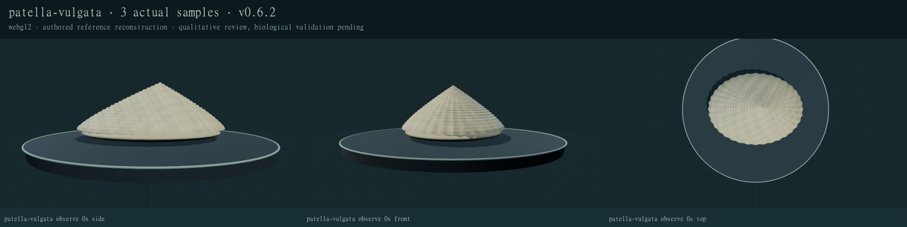
Animalia · Eukaryota · GBIF 5728474 · 3 actual samples · webgl2
Antarctic limpet Nacella concinna
Open this model and its evidence → Compared and revised: A separate oval limpet study is linked to the Antarctic shell-variation research; conical height was reduced after comparison.
Compared and revised: A separate oval limpet study is linked to the Antarctic shell-variation research; conical height was reduced after comparison.
Remaining inaccuracies: One authored profile cannot represent intertidal/subtidal variation. Apex curvature, shell thickness/erosion and mantle are simplified. No measured ecotype dimensions, pedal waves or grazing mechanics.
Real image: Simon Tonge · CC0 · Original caption, imaging context and terms. Delivered SHA-256 0c10cb3f25eb5d16ea9a777ce1742b54966d0334e08e7844e29c450945dc9e39.
Image identification, stage and phenotype remain subject to specialist verification.
Source and movement scope
- Scientific account: Qualitative species/account context; no measured mesh or motion imported. Full retrieval limited; indexed context/image and specialist follow-up remain necessary. Retrieval: limited; further reading needed.
- GBIF · Accepted species taxonomy: Taxonomic name/rank/family matching only; not behavior or native-range evidence.
- Licensed real organism reference and imaging context: Actual reference image and original caption/creator/license; not universal phenotype or biological validation.
- Particle capture — pending · unavailable: Biological process documented in the species context; no working simulation of this mechanism is claimed.
Same model identifier: reference-nacella-concinna. Display seconds have no calibrated biological time.
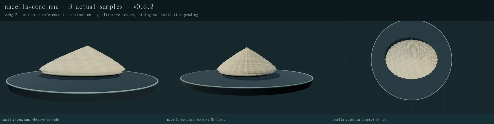
Animalia · Eukaryota · GBIF 2293579 · 3 actual samples · webgl2
Volcano keyhole limpet Fissurella volcano
Open this model and its evidence → Compared and revised: The cap has an actual opening through the apical mesh, with radial surface relief; empty-shell reference scope is explicit.
Compared and revised: The cap has an actual opening through the apical mesh, with radial surface relief; empty-shell reference scope is explicit.
Remaining inaccuracies: Foramen is too nearly round and small compared with the elongated photographed opening. Shell bands, layered shell thickness, mantle/gills and radula remain incomplete. No feeding animation.
Real image: H. Zell · CC BY-SA 3.0 · Original caption, imaging context and terms. Delivered SHA-256 a9c8bd2d902b537c8043c0b75da810d5ad4d32f956c01cdedef3af2cf350d3f1.
Photographed empty shell views; not a living soft-body or movement reference.
Source and movement scope
- Just a moment...: Qualitative morphology/ecology context; no measurements or rates imported. Source specimens, laboratory conditions and historical taxon concepts may differ from the reference image. Full retrieval limited; indexed context/image and specialist follow-up remain necessary. Retrieval: limited; further reading needed.
- GBIF · Accepted species taxonomy: Taxonomic name/rank/family matching only; not behavior or native-range evidence.
- Licensed real organism reference and imaging context: Actual reference image and original caption/creator/license; not universal phenotype or biological validation.
- Particle capture — pending · unavailable: Biological process documented in the species context; no working simulation of this mechanism is claimed.
Same model identifier: reference-fissurella-volcano. Display seconds have no calibrated biological time.
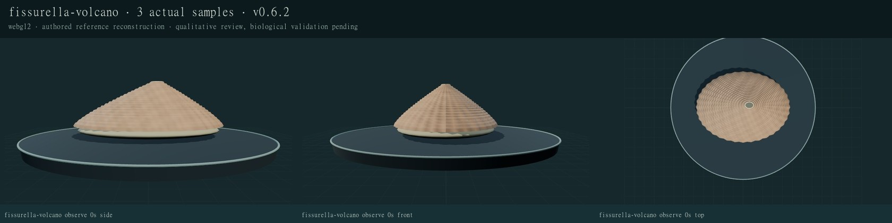
Animalia · Eukaryota · GBIF 2293078 · 3 actual samples · webgl2
Red abalone Haliotis rufescens
Open this model and its evidence → Compared and revised: A low ear-shaped shell includes a row of actual openings and marginal sensory-fringe cues above the foot.
Compared and revised: A low ear-shaped shell includes a row of actual openings and marginal sensory-fringe cues above the foot.
Remaining inaccuracies: Mesh-cut pore edges are jagged, pore spacing/count and colour are authored. The reference is encrusted; its epibionts are not red abalone tissue. Head, epipodial folds, nacre and foot-muscle contact need much greater detail; graze unavailable.
Real image: Southwest Fisheries Science Center, NOAA Fisheries Service · Public domain · Original caption, imaging context and terms. Delivered SHA-256 cc97dcfd4be207d438c9dd21ab45cbe405369f948756663a2e6a949ed1bfdc27.
Image identification, stage and phenotype remain subject to specialist verification.
Source and movement scope
- Red Abalone | Online Learning Center | Aquarium of the Pacific: Qualitative morphology/ecology context; no measurements or rates imported. Source specimens, laboratory conditions and historical taxon concepts may differ from the reference image. Retrieved account; does not validate geometry. Retrieval: readable account.
- GBIF · Accepted species taxonomy: Taxonomic name/rank/family matching only; not behavior or native-range evidence.
- Licensed real organism reference and imaging context: Actual reference image and original caption/creator/license; not universal phenotype or biological validation.
- Particle capture — pending · unavailable: Biological process documented in the species context; no working simulation of this mechanism is claimed.
Same model identifier: reference-haliotis-rufescens. Display seconds have no calibrated biological time.
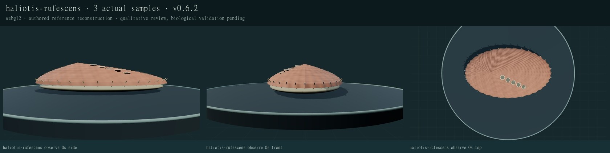
Animalia · Eukaryota · GBIF 2293076 · 3 actual samples · webgl2
European abalone Haliotis tuberculata
Open this model and its evidence → Compared and revised: Low asymmetric shell, pore row and sculpture were compared with the MarLIN account and a Cretan shell photograph.
Compared and revised: Low asymmetric shell, pore row and sculpture were compared with the MarLIN account and a Cretan shell photograph.
Remaining inaccuracies: Pores are too uniform and coarse at their edges; shell does not reproduce natural layered ridges, erosion or nacre. Reference is an empty shell and does not establish live soft-body posture. No feeding mechanism.
Real image: Hans Hillewaert · CC BY-SA 4.0 · Original caption, imaging context and terms. Delivered SHA-256 d75fa7e33fd69e283034a1c33a517cad9d7ef7abd4a12340fe8e957bf3b54a2b.
Photographed shell from Crete; shell form and openings only, not soft-body or live motion evidence.
Source and movement scope
Same model identifier: reference-haliotis-tuberculata. Display seconds have no calibrated biological time.
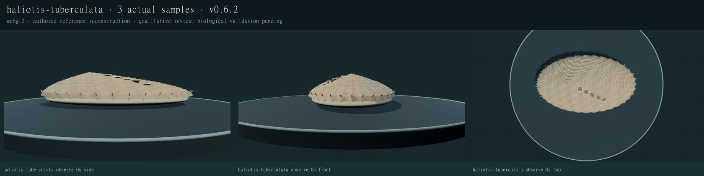
Animalia · Eukaryota · GBIF 2301117 · 7 actual samples · webgl2
Common periwinkle Littorina littorea
Open this model and its evidence → Compared and revised: Expanding spiral, foot and paired basal-eyed tentacles retain the same surfaces during a small authored tentacle gesture. Disconnected initial whorls were replaced.
Compared and revised: Expanding spiral, foot and paired basal-eyed tentacles retain the same surfaces during a small authored tentacle gesture. Disconnected initial whorls were replaced.
Remaining inaccuracies: Body-whorl aperture and outer lip remain too open/thin; shell-to-body transition, operculum and retraction are incomplete. Foot is too uniform and long. No calibrated sensory motion or locomotion.
Real image: Photographed by Guttorm Flatabø ( user:dittaeva ). · CC BY-SA 3.0 · Original caption, imaging context and terms. Delivered SHA-256 a02337c8af149955d466bf5240f9a82d43e8456c561b4f3551d65d8cd6a13050.
Image identification, stage and phenotype remain subject to specialist verification.
Source and movement scope
- Common periwinkle (Littorina littorea) - MarLIN - The Marine Life Information Network: Qualitative morphology/ecology account; no coordinates, developmental rates or biomechanical trajectories imported. Retrieved account; does not validate geometry. Retrieval: readable account.
- GBIF · Accepted species taxonomy: Taxonomic name/rank/family matching only; not behavior or native-range evidence.
- Licensed real organism reference and imaging context: Actual reference image and original caption/creator/license; not universal phenotype or biological validation.
- Tentacle study · partial: Authored reference reconstruction from qualitative morphology and the separately licensed image. Shape, pigmentation, stage, dimensions and playback are not measured or independently validated. Appendage/deformation controls are partial studies; feeding, forces, fluid dynamics and calibrated locomotion are absent.
Same model identifier: reference-littorina-littorea. Display seconds have no calibrated biological time.
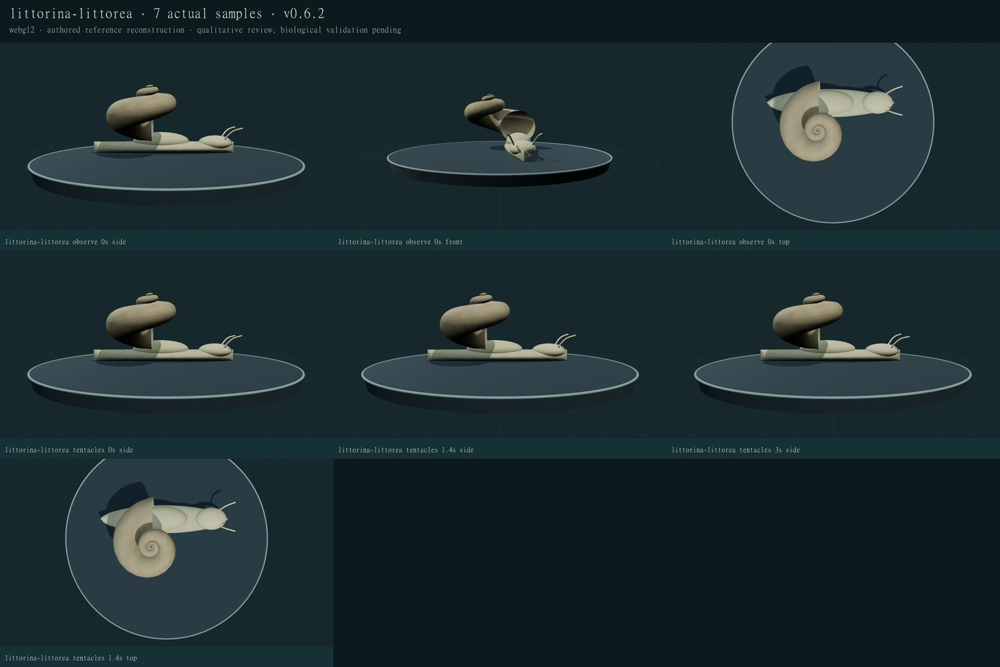
Animalia · Eukaryota · GBIF 2301066 · 7 actual samples · webgl2
Flat periwinkle Littorina obtusata
Open this model and its evidence → Compared and revised: Lower-spired yellow shell phenotype is distinguished from common periwinkle; tentacles gesture on the retained body.
Compared and revised: Lower-spired yellow shell phenotype is distinguished from common periwinkle; tentacles gesture on the retained body.
Remaining inaccuracies: Low spire and globose body whorl still need specimen-based reconstruction; aperture lip, reticulate sculpture and tissue connection are crude. Yellow is one phenotype; empty-shell photo does not validate motion.
Real image: H. Zell · CC BY-SA 3.0 · Original caption, imaging context and terms. Delivered SHA-256 e957f6b80c94e0b7c82e947cec43aa2fe2fdd2c4acf8f1a267400d3bcd646cc0.
Empty-shell views of one yellow phenotype; not live posture or universal colour.
Source and movement scope
- Common flat periwinkle (Littorina obtusata) - MarLIN - The Marine Life Information Network: Qualitative morphology/ecology account; no coordinates, developmental rates or biomechanical trajectories imported. Retrieved account; does not validate geometry. Retrieval: readable account.
- GBIF · Accepted species taxonomy: Taxonomic name/rank/family matching only; not behavior or native-range evidence.
- Licensed real organism reference and imaging context: Actual reference image and original caption/creator/license; not universal phenotype or biological validation.
- Tentacle study · partial: Authored reference reconstruction from qualitative morphology and the separately licensed image. Shape, pigmentation, stage, dimensions and playback are not measured or independently validated. Appendage/deformation controls are partial studies; feeding, forces, fluid dynamics and calibrated locomotion are absent.
Same model identifier: reference-littorina-obtusata. Display seconds have no calibrated biological time.
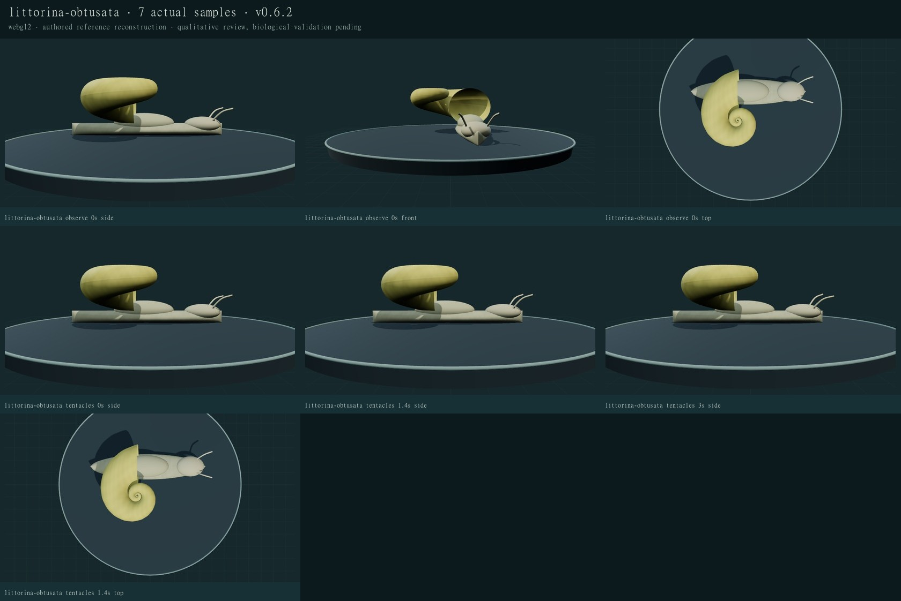
Animalia · Eukaryota · GBIF 5193449 · 7 actual samples · webgl2
Dog whelk Nucella lapillus
Open this model and its evidence → Compared and revised: More elevated spire and short siphonal-region cue distinguish this authored predator study; spiral overlap and tissue support were corrected.
Compared and revised: More elevated spire and short siphonal-region cue distinguish this authored predator study; spiral overlap and tissue support were corrected.
Remaining inaccuracies: Siphonal canal is not anatomically resolved and aperture/columella/operculum are incomplete. Natural shell variation, sculptural ridges and mantle anatomy are simplified. No drilling, prey handling or measured tentacle trajectories.
Real image: Martin Talbot · CC BY 2.0 · Original caption, imaging context and terms. Delivered SHA-256 9b41bf1b7b78cb573496ff08b2af17557154dc04321c025de5ae36da22abdb3f.
Image identification, stage and phenotype remain subject to specialist verification.
Source and movement scope
- Dog whelk (Nucella lapillus) - MarLIN - The Marine Life Information Network: Qualitative species/account context; no measured mesh or motion imported. Retrieved account; does not validate geometry. Retrieval: readable account.
- GBIF · Accepted species taxonomy: Taxonomic name/rank/family matching only; not behavior or native-range evidence.
- Licensed real organism reference and imaging context: Actual reference image and original caption/creator/license; not universal phenotype or biological validation.
- Tentacle study · partial: Authored reference reconstruction from qualitative morphology and the separately licensed image. Shape, pigmentation, stage, dimensions and playback are not measured or independently validated. Appendage/deformation controls are partial studies; feeding, forces, fluid dynamics and calibrated locomotion are absent.
Same model identifier: reference-nucella-lapillus. Display seconds have no calibrated biological time.
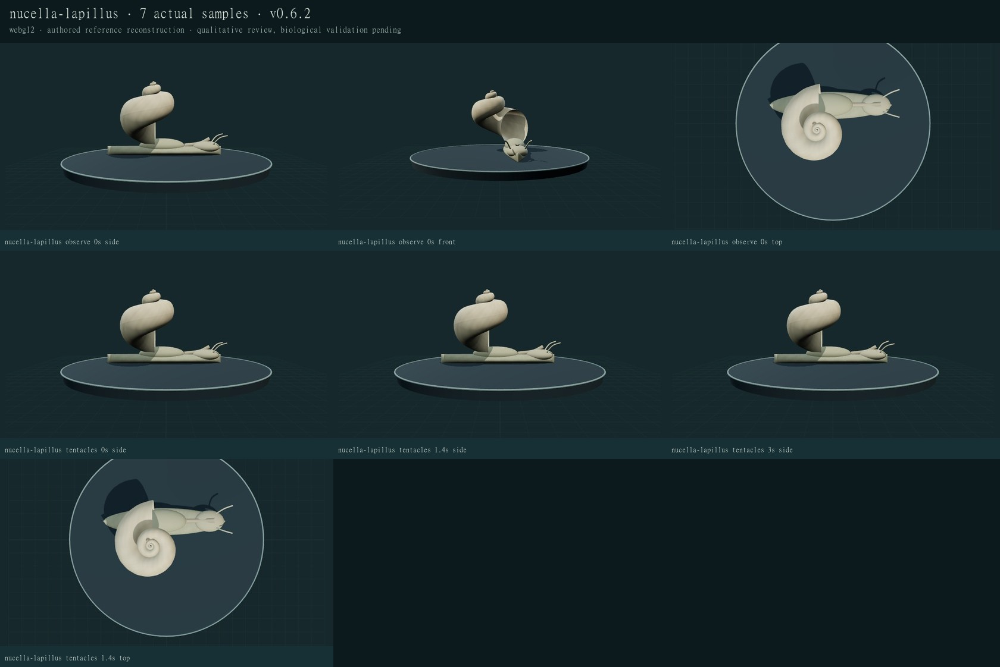
Animalia · Eukaryota · GBIF 2305073 · 7 actual samples · webgl2
Common whelk Buccinum undatum
Open this model and its evidence → Compared and revised: Elevated spiral and stronger axial-relief cue were compared with the whelk account and photographed living specimen.
Compared and revised: Elevated spiral and stronger axial-relief cue were compared with the whelk account and photographed living specimen.
Remaining inaccuracies: Axial folds and spiral ridges remain too regular; aperture, siphonal notch, soft siphon, operculum and head proportions require reconstruction. Tentacle motion is a gesture; no feeding, burrowing or locomotion.
Real image: Hans Hillewaert · CC BY-SA 4.0 · Original caption, imaging context and terms. Delivered SHA-256 66156ac7176c0f3a1221389b0f55ed7ea3467bfc6f8dd30d187a9d51a144285d.
Image identification, stage and phenotype remain subject to specialist verification.
Source and movement scope
- Common whelk (Buccinum undatum) - MarLIN - The Marine Life Information Network: Qualitative species/account context; no measured mesh or motion imported. Retrieved account; does not validate geometry. Retrieval: readable account.
- GBIF · Accepted species taxonomy: Taxonomic name/rank/family matching only; not behavior or native-range evidence.
- Licensed real organism reference and imaging context: Actual reference image and original caption/creator/license; not universal phenotype or biological validation.
- Tentacle study · partial: Authored reference reconstruction from qualitative morphology and the separately licensed image. Shape, pigmentation, stage, dimensions and playback are not measured or independently validated. Appendage/deformation controls are partial studies; feeding, forces, fluid dynamics and calibrated locomotion are absent.
Same model identifier: reference-buccinum-undatum. Display seconds have no calibrated biological time.
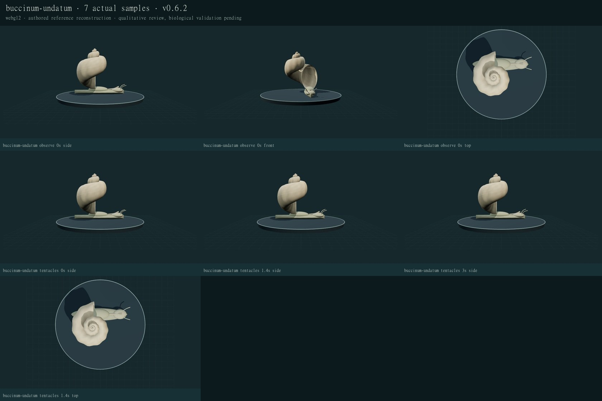
Animalia · Eukaryota · GBIF 5192789 · 3 actual samples · webgl2
Slipper limpet Crepidula fornicata
Open this model and its evidence → Compared and revised: A lower asymmetric cap was distinguished from limpet cones after shell-image comparison.
Compared and revised: A lower asymmetric cap was distinguished from limpet cones after shell-image comparison.
Remaining inaccuracies: Internal shelf is not resolved in the exterior study, apex and shell outline remain too conical, and attachment stacks are absent. Soft mantle/gill filtering structures and sex/life-stage changes are unmodelled. Filtration stays unavailable.
Real image: H. Zell · CC BY-SA 3.0 · Original caption, imaging context and terms. Delivered SHA-256 af1bd783171c6fe41165136f47d8d4597f95735e2ac72d04c8ce93d1791b008f.
Photographed empty shell with inner shelf; not live feeding or attachment evidence.
Source and movement scope
Same model identifier: reference-crepidula-fornicata. Display seconds have no calibrated biological time.
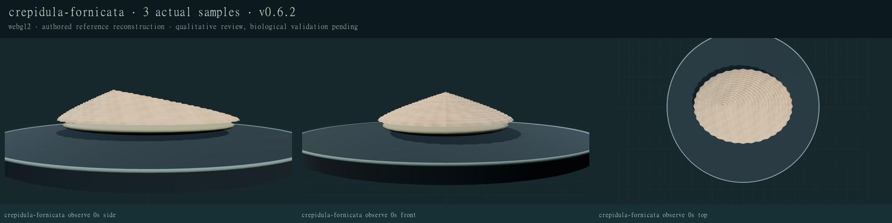
Animalia · Eukaryota · GBIF 5778354 · 7 actual samples · webgl2
Marsh pond snail Stagnicola palustris
Open this model and its evidence → Compared and revised: Accepted name reconciled from Lymnaea palustris; elevated spire, triangular tentacles and continuous foot were compared with the USGS account and real animal.
Compared and revised: Accepted name reconciled from Lymnaea palustris; elevated spire, triangular tentacles and continuous foot were compared with the USGS account and real animal.
Remaining inaccuracies: Elongation/whorl convexity, aperture, mantle and pneumostome are approximate. Shell shape alone does not distinguish the palustris complex or S. elodes. Tentacle movement is uncalibrated and the body is too uniform.
Real image: Alexander Mrkvicka · CC BY-SA 3.0 · Original caption, imaging context and terms. Delivered SHA-256 b11db5d3d78f9644ec0fe94b3b3e702c65f80ec9b9c807a44891d757e8495248.
Image identification, stage and phenotype remain subject to specialist verification.
Source and movement scope
- Species Profile - Stagnicola palustris: Qualitative morphology/ecology context; no measurements or rates imported. Source specimens, laboratory conditions and historical taxon concepts may differ from the reference image. Retrieved account; does not validate geometry. Retrieval: readable account.
- GBIF · Accepted species taxonomy: Taxonomic name/rank/family matching only; not behavior or native-range evidence.
- Licensed real organism reference and imaging context: Actual reference image and original caption/creator/license; not universal phenotype or biological validation.
- Tentacle study · partial: Authored reference reconstruction from qualitative morphology and the separately licensed image. Shape, pigmentation, stage, dimensions and playback are not measured or independently validated. Appendage/deformation controls are partial studies; feeding, forces, fluid dynamics and calibrated locomotion are absent.
Same model identifier: reference-stagnicola-palustris. Display seconds have no calibrated biological time.
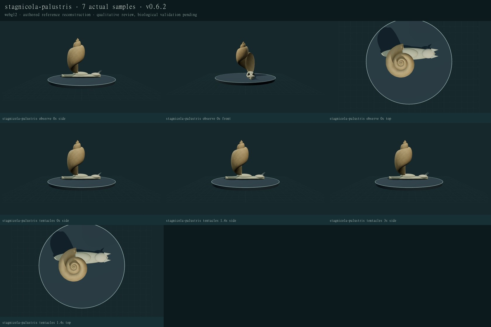
Animalia · Eukaryota · GBIF 2290946 · 7 actual samples · webgl2
Great ramshorn Planorbarius corneus
Open this model and its evidence → Compared and revised: A vertical planispiral shell is retained above a supported foot with slender tentacles; the source image is explicitly an albino individual.
Compared and revised: A vertical planispiral shell is retained above a supported foot with slender tentacles; the source image is explicitly an albino individual.
Remaining inaccuracies: Shell remains too thin and comma-like at the aperture; tissue transition, lip and growth ridges need refinement. Shell handedness/posture and natural resting orientation need specialist review. No pedal wave or calibrated tentacle movement; body colour is not matched to the albino photo.
Real image: Claus Ableiter · CC BY-SA 3.0 · Original caption, imaging context and terms. Delivered SHA-256 4f187b059e60150764786df2e8d21fc0a53dc791ebe5eba61817cfa46e0d48f5.
Albino living individual in the source caption; not a universal body-pigment phenotype.
Source and movement scope
- Planorbarius corneus: Qualitative morphology/ecology context; no measurements or rates imported. Source specimens, laboratory conditions and historical taxon concepts may differ from the reference image. Retrieved account; does not validate geometry. Retrieval: readable account.
- GBIF · Accepted species taxonomy: Taxonomic name/rank/family matching only; not behavior or native-range evidence.
- Licensed real organism reference and imaging context: Actual reference image and original caption/creator/license; not universal phenotype or biological validation.
- Tentacle study · partial: Authored reference reconstruction from qualitative morphology and the separately licensed image. Shape, pigmentation, stage, dimensions and playback are not measured or independently validated. Appendage/deformation controls are partial studies; feeding, forces, fluid dynamics and calibrated locomotion are absent.
Same model identifier: reference-planorbarius-corneus. Display seconds have no calibrated biological time.
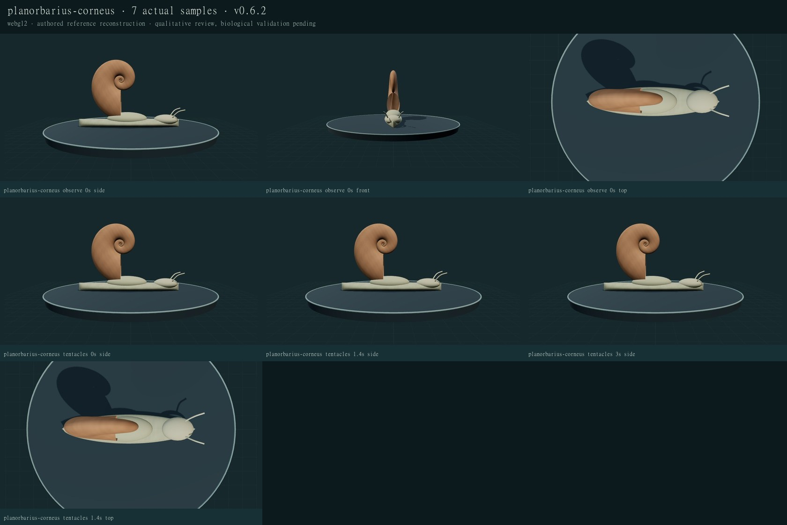
Animalia · Eukaryota · GBIF 2286583 · 3 actual samples · webgl2
Common cockle Cerastoderma edule
Open this model and its evidence → Compared and revised: Paired inflated valves and strong radial-rib cues were compared with the cockle reference and account.
Compared and revised: Paired inflated valves and strong radial-rib cues were compared with the cockle reference and account.
Remaining inaccuracies: The shell is too uniformly rounded and bun-like; off-centre umbones, crenulated margins, hinge teeth, ligament and living foot/siphons are absent. Closed exterior study is not a buried feeding posture. Filtration unavailable.
Real image: Féron Benjamin · CC BY-SA 2.0 · Original caption, imaging context and terms. Delivered SHA-256 0748bb3130c808e7622d2dc0471c61a2419048596ed6119c1e6051c77f352eb5.
Image identification, stage and phenotype remain subject to specialist verification.
Source and movement scope
Same model identifier: reference-cerastoderma-edule. Display seconds have no calibrated biological time.
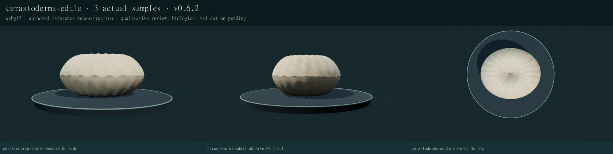
Animalia · Eukaryota · GBIF 4372686 · 3 actual samples · webgl2
Manila clam Ruditapes philippinarum
Open this model and its evidence → Compared and revised: Paired oval valves and crossed surface-relief cues are linked to FAO shell morphology and harvested-shell variation.
Compared and revised: Paired oval valves and crossed surface-relief cues are linked to FAO shell morphology and harvested-shell variation.
Remaining inaccuracies: Exterior remains too symmetrical and uniform, anterior beaks and true decussate sculpture are unresolved. The wide pattern variation in the reference is absent. No siphons, hinge anatomy, burrowing or filtration simulation.
Real image: Takahashi (uploader of PD-self original; source author field blank) · Public domain · Original caption, imaging context and terms. Delivered SHA-256 947cecbeb4905b0bdf887cce935c163d7e9befbcf2fe9c39826b8acd611a94b2.
Harvested Japanese shells illustrating variable pattern; not living feeding posture.
Source and movement scope
- FAO - Ruditapes philippinarum: Species/culture account context; no calibrated mesh or measured trajectories imported. Retrieved account; does not validate geometry. Retrieval: readable account.
- GBIF · Accepted species taxonomy: Taxonomic name/rank/family matching only; not behavior or native-range evidence.
- Licensed real organism reference and imaging context: Actual reference image and original caption/creator/license; not universal phenotype or biological validation.
- Filtration — pending · unavailable: Biological process documented in the species context; no working simulation of this mechanism is claimed.
Same model identifier: reference-ruditapes-philippinarum. Display seconds have no calibrated biological time.
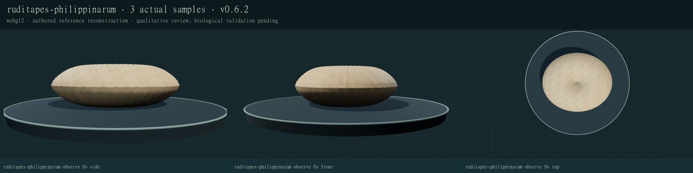
Animalia · Eukaryota · GBIF 2287668 · 3 actual samples · webgl2
Hard clam Mercenaria mercenaria
Open this model and its evidence → Compared and revised: Thick paired valves have concentric relief; harvested individuals are described as such.
Compared and revised: Thick paired valves have concentric relief; harvested individuals are described as such.
Remaining inaccuracies: Valve outline is too symmetric; umbones, ligament, cardinal teeth, pallial structures and genuine incremental growth rings need reconstruction. No sediment burial, siphons or filtration. Internal purple pigment cannot be inferred from this exterior.
Real image: Ken Hammond · Public domain · Original caption, imaging context and terms. Delivered SHA-256 54d5a8288f13460a031fdd21d42fb148cd87a8379cf11f7576d5c2c4dfa21721.
Harvested clams in hands; not a native sediment posture reference.
Source and movement scope
Same model identifier: reference-mercenaria-mercenaria. Display seconds have no calibrated biological time.
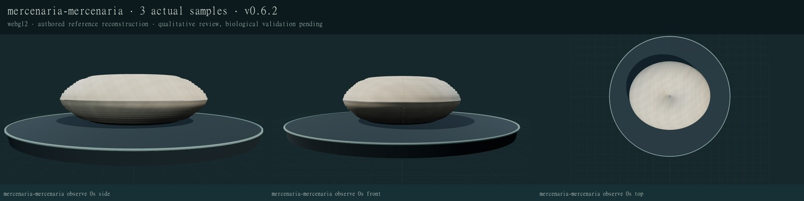
Animalia · Eukaryota · GBIF 2287248 · 3 actual samples · webgl2
Sword razor shell Ensis ensis
Open this model and its evidence → Compared and revised: Long narrow curved shell proportions are separated from round clams; a previously mismatched E. phaxoides image was replaced.
Compared and revised: Long narrow curved shell proportions are separated from round clams; a previously mismatched E. phaxoides image was replaced.
Remaining inaccuracies: Outline remains too lens-like and flattened; the living shell is a long partly open tube with distinct ends. Hinge, shell thickness, foot and siphons are missing. Beach shell is not burrowing-posture evidence; filtration unavailable.
Real image: Hans Hillewaert · CC BY-SA 4.0 · Original caption, imaging context and terms. Delivered SHA-256 712c61ac9bc24f24234077d60fe6e31711cb0b636e00db37d509af72156917a9.
Empty shell on beach; shell outline only, not burrowing posture or living siphon evidence.
Source and movement scope
Same model identifier: reference-ensis-ensis. Display seconds have no calibrated biological time.
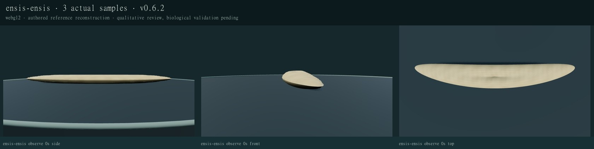
Animalia · Eukaryota · GBIF 7791733 · 3 actual samples · webgl2
Soft-shell clam Mya arenaria
Open this model and its evidence → Compared and revised: A pale elongated paired shell was compared with the sand-gaper account and shell photograph.
Compared and revised: A pale elongated paired shell was compared with the sand-gaper account and shell photograph.
Remaining inaccuracies: Posterior gape and large siphons are not implemented; shell remains too closed, smooth and symmetrical. Chondrophore, periostracum, sediment support and live orientation are absent. No filter or burrowing simulation.
Real image: Kirsten Poulsen · CC BY-SA 3.0 · Original caption, imaging context and terms. Delivered SHA-256 d32e7f08de1a46f57c43b3691d056502d0665e8e9eeeddd6f5162baa6f261d82.
Photographed shell; not a live extended-siphon posture reference.
Source and movement scope
Same model identifier: reference-mya-arenaria. Display seconds have no calibrated biological time.
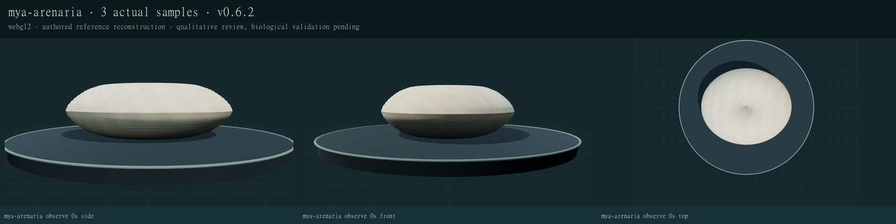
Animalia · Eukaryota · GBIF 4374731 · 3 actual samples · webgl2
Fan mussel Pinna nobilis
Open this model and its evidence → Compared and revised: An upright tapering wedge is distinguished from horizontal clams; a live encrusted reference and primary shell study are retained.
Compared and revised: An upright tapering wedge is distinguished from horizontal clams; a live encrusted reference and primary shell study are retained.
Remaining inaccuracies: Wedge is overly triangular and thin, with a straight broad margin and poorly resolved valve seam. Natural rounded outline, scaly sculpture, byssal attachment, partial burial, mantle and gills are absent. Encrusting organisms in the photo are not shell tissue; feeding unavailable.
Real image: Hectonichus · CC BY-SA 3.0 · Original caption, imaging context and terms. Delivered SHA-256 a428ff7d854bd20f8f73f258150f1c2db716e4cf798b336ca6d76d599966bd9b.
Image identification, stage and phenotype remain subject to specialist verification.
Source and movement scope
- Checking your browser - reCAPTCHA: Qualitative morphology/ecology context; no measurements or rates imported. Source specimens, laboratory conditions and historical taxon concepts may differ from the reference image. Full retrieval limited; indexed context/image and specialist follow-up remain necessary. Retrieval: limited; further reading needed.
- GBIF · Accepted species taxonomy: Taxonomic name/rank/family matching only; not behavior or native-range evidence.
- Licensed real organism reference and imaging context: Actual reference image and original caption/creator/license; not universal phenotype or biological validation.
- Filtration — pending · unavailable: Suspension feeding is documented; the reconstruction has no gill-current or particle-capture mechanism. This species can also take small prey; no exclusive feeding mechanism is inferred.
Same model identifier: reference-pinna-nobilis. Display seconds have no calibrated biological time.
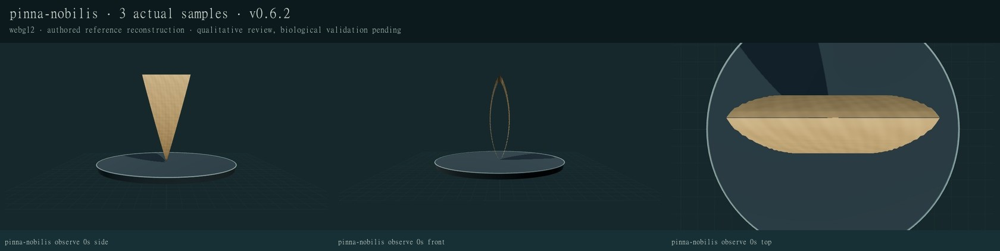
Animalia · Eukaryota · GBIF 5188891 · 7 actual samples · webgl2
Iceland scallop Chlamys islandica
Open this model and its evidence → Compared and revised: Fan-shaped ribbed valves and unequal-hinge-ear context were compared with the shell reference and Norwegian institute account. Upper valve rotates about the retained hinge axis.
Compared and revised: Fan-shaped ribbed valves and unequal-hinge-ear context were compared with the shell reference and Norwegian institute account. Upper valve rotates about the retained hinge axis.
Remaining inaccuracies: Valves are too thick and evenly domed, ears too rounded/equal and the hinge gap too blunt. Mantle eyes, tentacles, adductor and water jet are absent. Valve opening is qualitative, not swimming kinematics or thrust.
Real image: Acélan · CC BY-SA 3.0 · Original caption, imaging context and terms. Delivered SHA-256 a928b1ffc13945343d0267187f84cb1756de40f7774943eb444aa55c0fb0d66a.
Photographed scallop shell; not live mantle/eye/valve motion evidence.
Source and movement scope
- Haneskjell | Havforskningsinstituttet: Qualitative species/account context; no measured mesh or motion imported. Retrieved account; does not validate geometry. Retrieval: readable account.
- GBIF · Accepted species taxonomy: Taxonomic name/rank/family matching only; not behavior or native-range evidence.
- Licensed real organism reference and imaging context: Actual reference image and original caption/creator/license; not universal phenotype or biological validation.
- Valve-opening study · partial: Authored reference reconstruction from qualitative morphology and the separately licensed image. Shape, pigmentation, stage, dimensions and playback are not measured or independently validated. Appendage/deformation controls are partial studies; feeding, forces, fluid dynamics and calibrated locomotion are absent.
Same model identifier: reference-chlamys-islandica. Display seconds have no calibrated biological time.
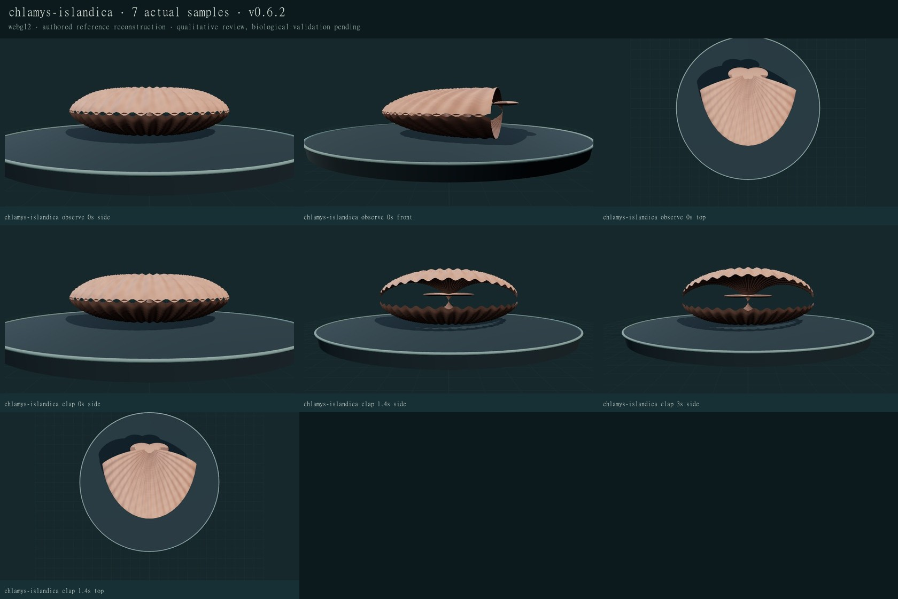
Animalia · Eukaryota · GBIF 2285838 · 7 actual samples · webgl2
Queen scallop Aequipecten opercularis
Open this model and its evidence → Compared and revised: Rounded fan valves, rib cues and hinge-ear regions remain on the same geometry during an authored valve-opening study.
Compared and revised: Rounded fan valves, rib cues and hinge-ear regions remain on the same geometry during an authored valve-opening study.
Remaining inaccuracies: Outline, rib count/profile, mantle margin and natural colour variation need specimen-based refinement. Hinge ears are simplified and there is no measured closure timing, adductor force, jet or swimming displacement. Empty shells do not establish live posture.
Real image: Didier Descouens · CC BY-SA 4.0 · Original caption, imaging context and terms. Delivered SHA-256 e6238c0e5e116c42e27e2fc625d15f7179f7146b496ef07f52634da9e1e7d002.
Two valves of two specimens; empty-shell sculpture context, not observed swimming.
Source and movement scope
- Queen scallop (Aequipecten opercularis) - MarLIN - The Marine Life Information Network: Qualitative morphology/ecology account; no coordinates, developmental rates or biomechanical trajectories imported. Retrieved account; does not validate geometry. Retrieval: readable account.
- GBIF · Accepted species taxonomy: Taxonomic name/rank/family matching only; not behavior or native-range evidence.
- Licensed real organism reference and imaging context: Actual reference image and original caption/creator/license; not universal phenotype or biological validation.
- Valve-opening study · partial: Authored reference reconstruction from qualitative morphology and the separately licensed image. Shape, pigmentation, stage, dimensions and playback are not measured or independently validated. Appendage/deformation controls are partial studies; feeding, forces, fluid dynamics and calibrated locomotion are absent.
Same model identifier: reference-aequipecten-opercularis. Display seconds have no calibrated biological time.
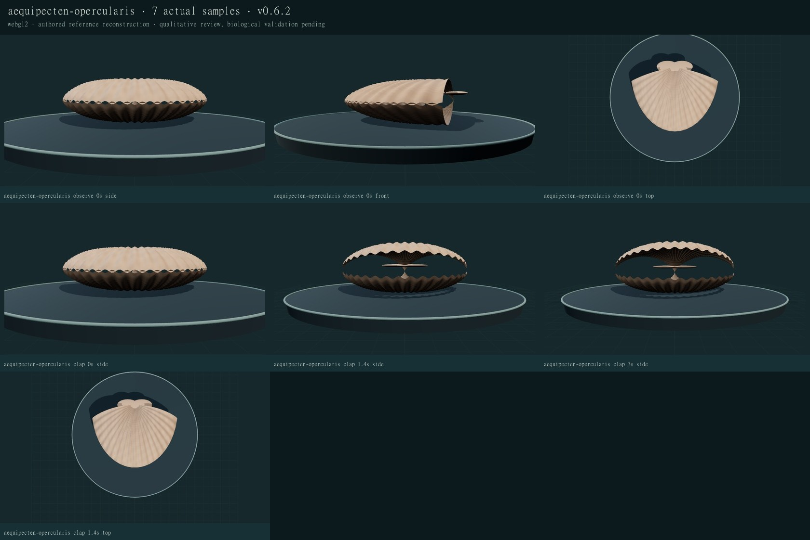
Plantae · Eukaryota · GBIF 2777724 · 7 actual samples · webgl2
Aloe Aloe vera
Open this model and its evidence → Compared and revised: Thick tapered rosette leaves have margin teeth, subdued pigment and anchored mature-form size interpolation.
Compared and revised: Thick tapered rosette leaves have margin teeth, subdued pigment and anchored mature-form size interpolation.
Remaining inaccuracies: Rosette is too radially regular and leaves too flat/uniformly pale; cuticle, old-leaf bases, flowers and natural asymmetry are missing. Uniform scaling is not tissue growth or developmental timing.
Real image: Collage by en:User:MidgleyDJ , original images from Wikimedia commons ( Image:Aloe_vera_offsets.jpg and Image:Aloe_vera_C.jpg ) · CC BY-SA 3.0 · Original caption, imaging context and terms. Delivered SHA-256 eaffdf5aa258ef201f496b9361a2055eed69713477b296b83e31600fd4554f79.
Image identification, stage and phenotype remain subject to specialist verification.
Source and movement scope
- Aloe vera (Aloe, Aloe Vera, Barbados Aloe, Medicinal Aloe, Medicine Plant, True Aloe) | North Carolina Extension Gardener Plant Toolbox: Qualitative morphology/ecology account; no coordinates, developmental rates or biomechanical trajectories imported. Retrieved account; does not validate geometry. Retrieval: readable account.
- GBIF · Accepted species taxonomy: Taxonomic name/rank/family matching only; not behavior or native-range evidence.
- Licensed real organism reference and imaging context: Actual reference image and original caption/creator/license; not universal phenotype or biological validation.
- Anchored size study · partial: Authored reference reconstruction from qualitative morphology and the separately licensed image. Shape, pigmentation, stage, dimensions and playback are not measured or independently validated. Anchored size is a display interpolation, not a growth, ontogenetic or biomechanical simulation.
Same model identifier: reference-aloe-vera. Display seconds have no calibrated biological time.
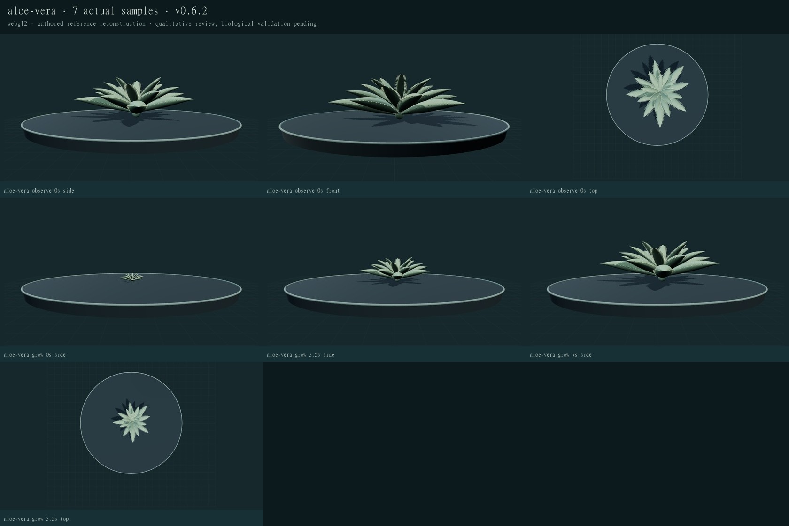
Plantae · Eukaryota · GBIF 2777537 · 7 actual samples · webgl2
Torch aloe Aloe arborescens
Open this model and its evidence → Compared and revised: Branching woody shoots support separate narrow toothed rosettes, compared with the SANBI account and real flowering plant.
Compared and revised: Branching woody shoots support separate narrow toothed rosettes, compared with the SANBI account and real flowering plant.
Remaining inaccuracies: Branch forks are too orderly/thin and crowns flattened; woody bark, retained leaf bases, inflorescences and age-related changes are absent. Source retrieval was limited; published indexed description and photograph do not validate geometry.
Real image: H. Zell · CC BY-SA 3.0 · Original caption, imaging context and terms. Delivered SHA-256 d5c648f4da626b40cbad630750465d28864e685eb0c9d5547df38f4cfe8d6101.
Image identification, stage and phenotype remain subject to specialist verification.
Source and movement scope
- Scientific account: Qualitative species/account context; no measured mesh or motion imported. Full retrieval limited; indexed context/image and specialist follow-up remain necessary. Retrieval: limited; further reading needed.
- GBIF · Accepted species taxonomy: Taxonomic name/rank/family matching only; not behavior or native-range evidence.
- Licensed real organism reference and imaging context: Actual reference image and original caption/creator/license; not universal phenotype or biological validation.
- Anchored size study · partial: Authored reference reconstruction from qualitative morphology and the separately licensed image. Shape, pigmentation, stage, dimensions and playback are not measured or independently validated. Anchored size is a display interpolation, not a growth, ontogenetic or biomechanical simulation.
Same model identifier: reference-aloe-arborescens. Display seconds have no calibrated biological time.
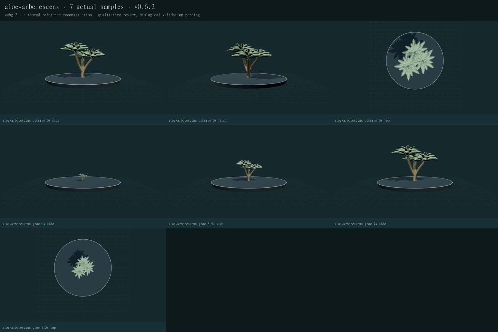
Plantae · Eukaryota · GBIF 2767031 · 7 actual samples · webgl2
Century plant Agave americana
Open this model and its evidence → Compared and revised: Broad stiff rosette leaves have margin teeth and terminal-spine cues; no such spines are added to A. attenuata.
Compared and revised: Broad stiff rosette leaves have margin teeth and terminal-spine cues; no such spines are added to A. attenuata.
Remaining inaccuracies: Leaf thickness/recurvature, tooth spacing, bud imprints and wax microstructure remain approximate. Reference photograph shows a flowering shoot absent from the vegetative model. No ontogeny or flowering simulation.
Real image: Zeynel Cebeci · CC BY-SA 4.0 · Original caption, imaging context and terms. Delivered SHA-256 b21d1481054d87ad20be5350b133ace8a67a147d884a615a581556217e761cff.
Flowering shoot photo; current model is a vegetative rosette and does not reconstruct this inflorescence.
Source and movement scope
- Agave americana (American Aloe, American Century Plant, Century Plant, Maguey, Mexican Soap Plant) | North Carolina Extension Gardener Plant Toolbox: Qualitative morphology/ecology account; no coordinates, developmental rates or biomechanical trajectories imported. Retrieved account; does not validate geometry. Retrieval: readable account.
- GBIF · Accepted species taxonomy: Taxonomic name/rank/family matching only; not behavior or native-range evidence.
- Licensed real organism reference and imaging context: Actual reference image and original caption/creator/license; not universal phenotype or biological validation.
- Anchored size study · partial: Authored reference reconstruction from qualitative morphology and the separately licensed image. Shape, pigmentation, stage, dimensions and playback are not measured or independently validated. Anchored size is a display interpolation, not a growth, ontogenetic or biomechanical simulation.
Same model identifier: reference-agave-americana. Display seconds have no calibrated biological time.
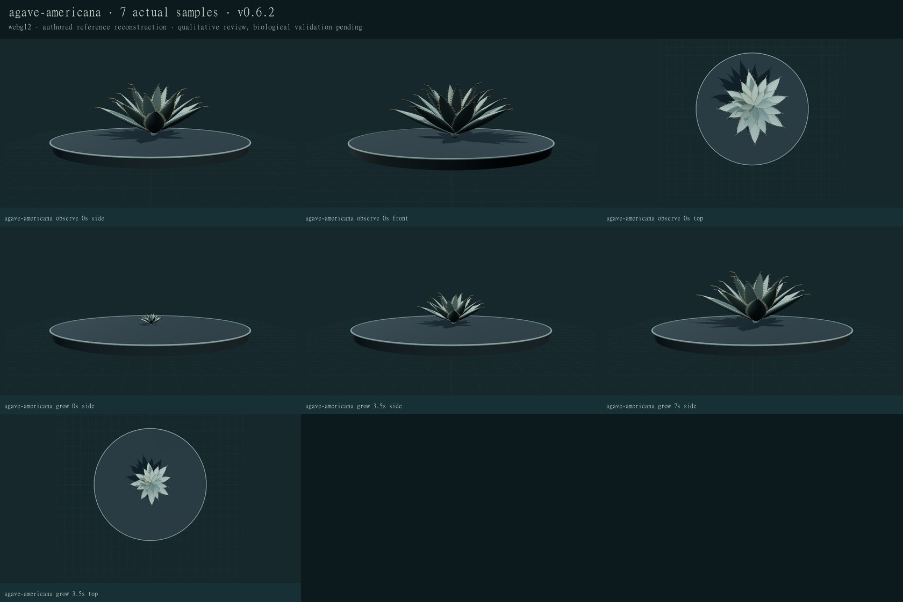
Plantae · Eukaryota · GBIF 2766613 · 7 actual samples · webgl2
Foxtail agave Agave attenuata
Open this model and its evidence → Compared and revised: Broad smooth-margin leaves are differentiated from spiny century plant; the university arboretum account and flowering clump provide context.
Compared and revised: Broad smooth-margin leaves are differentiated from spiny century plant; the university arboretum account and flowering clump provide context.
Remaining inaccuracies: Leaves remain too rigid and pointed, with too little trunk/clumping history. Foxtail inflorescence and old-leaf scars are absent. Surface pigment is numerical; scaling does not recreate development.
Real image: H. Zell · CC BY-SA 3.0 · Original caption, imaging context and terms. Delivered SHA-256 f0072b3087fce75e60c81099fc42c41b1d7ffc6fa7552a54ca235e149a5a38ac.
Image identification, stage and phenotype remain subject to specialist verification.
Source and movement scope
- Agave attenuata - Arboretum | Universidad Francisco Marroquín: Qualitative species/account context; no measured mesh or motion imported. Retrieved account; does not validate geometry. Retrieval: readable account.
- GBIF · Accepted species taxonomy: Taxonomic name/rank/family matching only; not behavior or native-range evidence.
- Licensed real organism reference and imaging context: Actual reference image and original caption/creator/license; not universal phenotype or biological validation.
- Anchored size study · partial: Authored reference reconstruction from qualitative morphology and the separately licensed image. Shape, pigmentation, stage, dimensions and playback are not measured or independently validated. Anchored size is a display interpolation, not a growth, ontogenetic or biomechanical simulation.
Same model identifier: reference-agave-attenuata. Display seconds have no calibrated biological time.
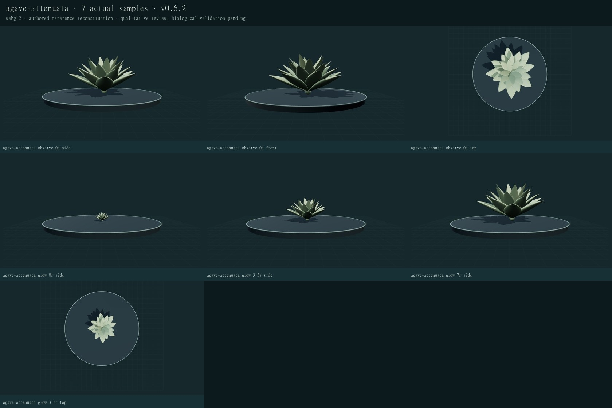
Plantae · Eukaryota · GBIF 9388529 · 7 actual samples · webgl2
Zebra haworthia Haworthiopsis attenuata
Open this model and its evidence → Compared and revised: Raised pale tubercles are arranged in repeated leaf bands and batched as instances without changing the surface study.
Compared and revised: Raised pale tubercles are arranged in repeated leaf bands and batched as instances without changing the surface study.
Remaining inaccuracies: Band positions and tubercle sizes are too uniform; leaf tips, mature offsets and natural surface asymmetry are incomplete. No real scanned epidermis. Size interpolation does not grow new leaves.
Real image: stephen boisvert from Chicago, United States · CC BY 2.0 · Original caption, imaging context and terms. Delivered SHA-256 754737ce479a60a7fcb160d37ee2bdf4640f3b4cdd76c1df3ed44add2690a3a2.
Image identification, stage and phenotype remain subject to specialist verification.
Source and movement scope
Same model identifier: reference-haworthiopsis-attenuata. Display seconds have no calibrated biological time.
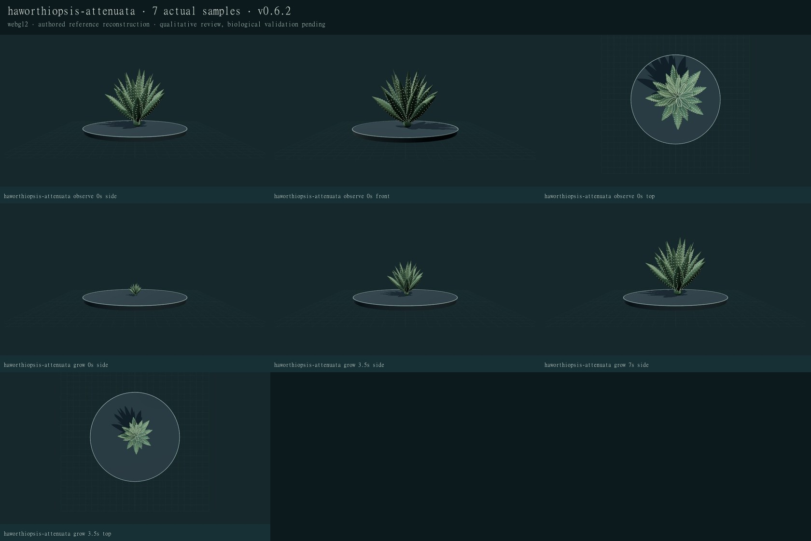
Plantae · Eukaryota · GBIF 2780103 · 7 actual samples · webgl2
Cooper’s haworthia Haworthia cooperi
Open this model and its evidence → Compared and revised: Compact fleshy leaves include pale apical-window and striation cues, with source variety differences disclosed.
Compared and revised: Compact fleshy leaves include pale apical-window and striation cues, with source variety differences disclosed.
Remaining inaccuracies: Windows are pigment cues and remain visibly opaque; optical leaf anatomy is absent. Leaves are too pointed/stacked. Source account concerns var. picturata, photograph var. cooperi; neither is a universal species phenotype.
Real image: Abu Shawka · CC0 · Original caption, imaging context and terms. Delivered SHA-256 b1a2887972e4ed8a158072b7faf51522ce1787da748b303ddc4311f0477efcf1.
Photo identified as var. cooperi; morphology source concerns var. picturata. Differences are not treated as universal species traits.
Source and movement scope
- Scientific account: Qualitative species/account context; no measured mesh or motion imported. Account concerns var. picturata; within-species variation is not transferred as universal morphology. Full retrieval limited; indexed context/image and specialist follow-up remain necessary. Retrieval: limited; further reading needed.
- GBIF · Accepted species taxonomy: Taxonomic name/rank/family matching only; not behavior or native-range evidence.
- Licensed real organism reference and imaging context: Actual reference image and original caption/creator/license; not universal phenotype or biological validation.
- Anchored size study · partial: Authored reference reconstruction from qualitative morphology and the separately licensed image. Shape, pigmentation, stage, dimensions and playback are not measured or independently validated. Anchored size is a display interpolation, not a growth, ontogenetic or biomechanical simulation.
Same model identifier: reference-haworthia-cooperi. Display seconds have no calibrated biological time.
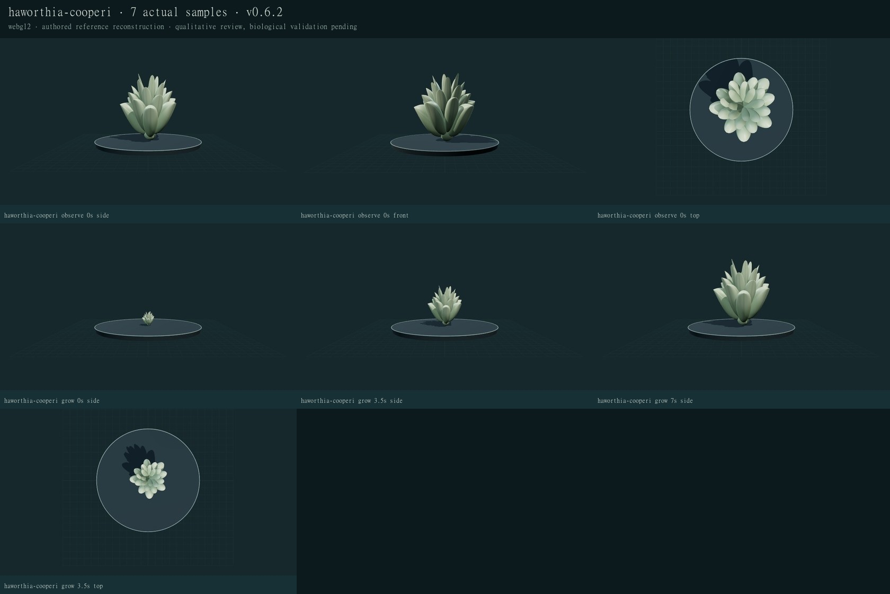
Plantae · Eukaryota · GBIF 2778690 · 7 actual samples · webgl2
Bicoloured gasteria Gasteria obliqua
Open this model and its evidence → Compared and revised: Accepted species reconciled from G. bicolor; a two-ranked mottled leaf fan is visible frontally and edge-on in side view.
Compared and revised: Accepted species reconciled from G. bicolor; a two-ranked mottled leaf fan is visible frontally and edge-on in side view.
Remaining inaccuracies: Leaf tips are too tapered and the common attachment schematic; adult rosette forms and variety differences need work. Account concerns dwarf var. liliputana, photo var. bicolor; their dimensions are not transferred to the whole species.
Real image: Stan Shebs · CC BY-SA 3.0 · Original caption, imaging context and terms. Delivered SHA-256 bb1307783ccd2aa5287c327283f7e2df6048b5fe2d45b96cf24c647d869955b9.
Source image labelled G. bicolor var. bicolor, under the accepted GBIF G. obliqua concept. Source account concerns var. liliputana, not the photographed individual.
Source and movement scope
- Scientific account: Qualitative species/account context; no measured mesh or motion imported. Account concerns G. bicolor var. liliputana under the accepted G. obliqua concept; small-variety dimensions are not used to scale the species model. Full retrieval limited; indexed context/image and specialist follow-up remain necessary. Retrieval: limited; further reading needed.
- GBIF · Accepted species taxonomy: Taxonomic name/rank/family matching only; not behavior or native-range evidence.
- Licensed real organism reference and imaging context: Actual reference image and original caption/creator/license; not universal phenotype or biological validation.
- Anchored size study · partial: Authored reference reconstruction from qualitative morphology and the separately licensed image. Shape, pigmentation, stage, dimensions and playback are not measured or independently validated. Anchored size is a display interpolation, not a growth, ontogenetic or biomechanical simulation.
Same model identifier: reference-gasteria-obliqua. Display seconds have no calibrated biological time.
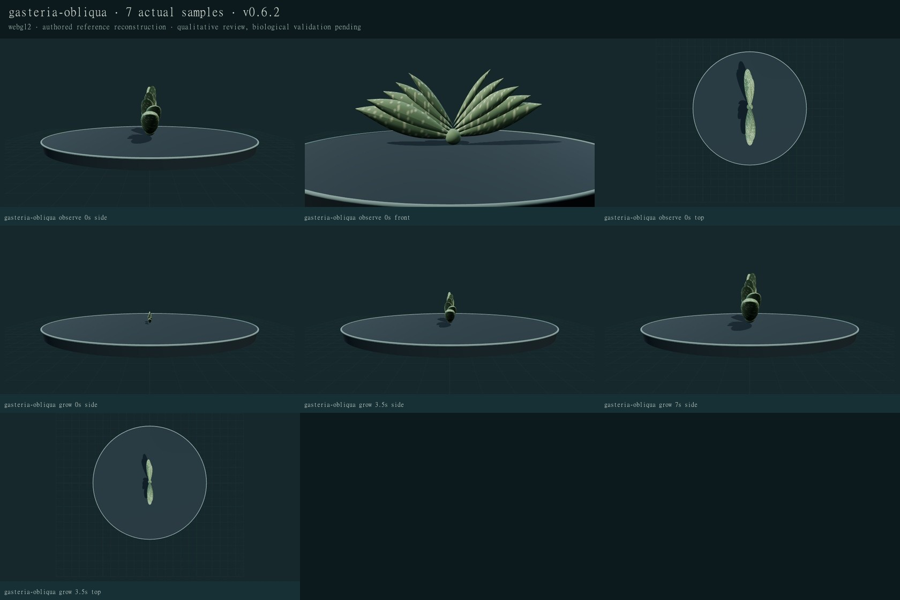
Plantae · Eukaryota · GBIF 8315197 · 7 actual samples · webgl2
Mexican snowball Echeveria elegans
Open this model and its evidence → Compared and revised: Spoon-shaped pale leaves form a layered rosette with a matte glaucous material cue.
Compared and revised: Spoon-shaped pale leaves form a layered rosette with a matte glaucous material cue.
Remaining inaccuracies: Spacing/thickness are too uniform, centre too open and leaf curvature too schematic. Wax bloom and tissue optics are unresolved; no flowering stem or developmental leaf sequence. Cultivated accession is not a measured wild specimen.
Real image: EriaWei · CC BY-SA 4.0 · Original caption, imaging context and terms. Delivered SHA-256 5c566f04888dc220e8ceea4240c2ba33485dfd64ba796a29e8d5d759fc422c79.
Cultivated accession labelled E. potosina in its source caption; accepted species concept reconciled separately. Not a measured wild reference.
Source and movement scope
- Echeveria elegans (Mexican Gem, Mexican Ghost Plant, Mexican Hens and Chicks, Mexican Snow Ball, White Mexican Rose) | North Carolina Extension Gardener Plant Toolbox: Qualitative morphology/ecology account; no coordinates, developmental rates or biomechanical trajectories imported. Retrieved account; does not validate geometry. Retrieval: readable account.
- GBIF · Accepted species taxonomy: Taxonomic name/rank/family matching only; not behavior or native-range evidence.
- Licensed real organism reference and imaging context: Actual reference image and original caption/creator/license; not universal phenotype or biological validation.
- Anchored size study · partial: Authored reference reconstruction from qualitative morphology and the separately licensed image. Shape, pigmentation, stage, dimensions and playback are not measured or independently validated. Anchored size is a display interpolation, not a growth, ontogenetic or biomechanical simulation.
Same model identifier: reference-echeveria-elegans. Display seconds have no calibrated biological time.
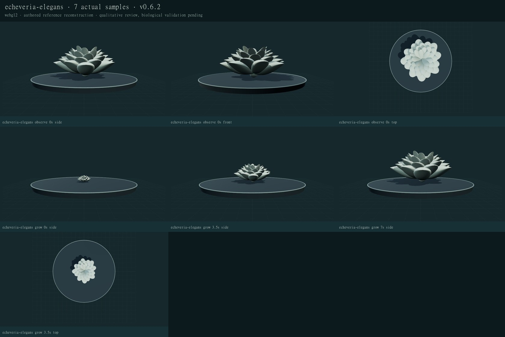
Plantae · Eukaryota · GBIF 7333993 · 7 actual samples · webgl2
Molded wax agave Echeveria agavoides
Open this model and its evidence → Compared and revised: More triangular succulent leaves and red apical pigment distinguish this rosette from E. elegans.
Compared and revised: More triangular succulent leaves and red apical pigment distinguish this rosette from E. elegans.
Remaining inaccuracies: Leaf bases overlap too uniformly, tips are too regular and stronger cultivated red pigmentation in the photo is not reproduced. Natural environmental/cultivar variation and flowers remain absent; no ontogeny.
Real image: Eria Wei · CC BY-SA 4.0 · Original caption, imaging context and terms. Delivered SHA-256 4d996c89eb6f59df032db87b92b8b2abe3c414378f86a668dc0a23cd8d9ec744.
Cultivated Huntington accession HBG 128906 with strong red markings; colour is not universal.
Source and movement scope
- Echeveria agavoides - The Ruth Bancroft Garden & Nursery: Qualitative species/account context; no measured mesh or motion imported. Retrieved account; does not validate geometry. Retrieval: readable account.
- GBIF · Accepted species taxonomy: Taxonomic name/rank/family matching only; not behavior or native-range evidence.
- Licensed real organism reference and imaging context: Actual reference image and original caption/creator/license; not universal phenotype or biological validation.
- Anchored size study · partial: Authored reference reconstruction from qualitative morphology and the separately licensed image. Shape, pigmentation, stage, dimensions and playback are not measured or independently validated. Anchored size is a display interpolation, not a growth, ontogenetic or biomechanical simulation.
Same model identifier: reference-echeveria-agavoides. Display seconds have no calibrated biological time.
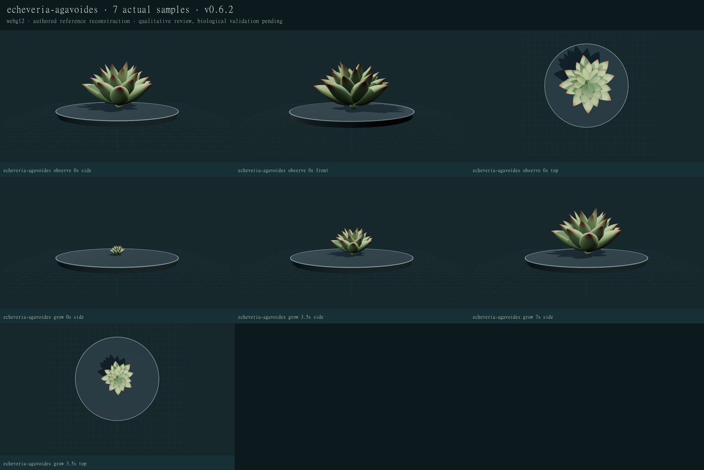
Plantae · Eukaryota · GBIF 2985949 · 7 actual samples · webgl2
Houseleek Sempervivum tectorum
Open this model and its evidence → Compared and revised: Dense pointed rosettes include connected offsets and instanced marginal cilia; expensive erroneous face hairs were removed.
Compared and revised: Dense pointed rosettes include connected offsets and instanced marginal cilia; expensive erroneous face hairs were removed.
Remaining inaccuracies: Offset placement is too regular and leaf overlap/tip detail remain coarse. Photograph shows flowering garden material absent from the vegetative model. Stolon extension, rosette death after flowering and development are not simulated.
Real image: Malene Thyssen · CC BY-SA 3.0 · Original caption, imaging context and terms. Delivered SHA-256 a78862fb29997694c42e66a2ef01617d4f69797863617e6614e7e1c0e7c4a2c6.
Flowering garden plant photo; current model is a vegetative rosette/offset study, not this flowering stage.
Source and movement scope
Same model identifier: reference-sempervivum-tectorum. Display seconds have no calibrated biological time.
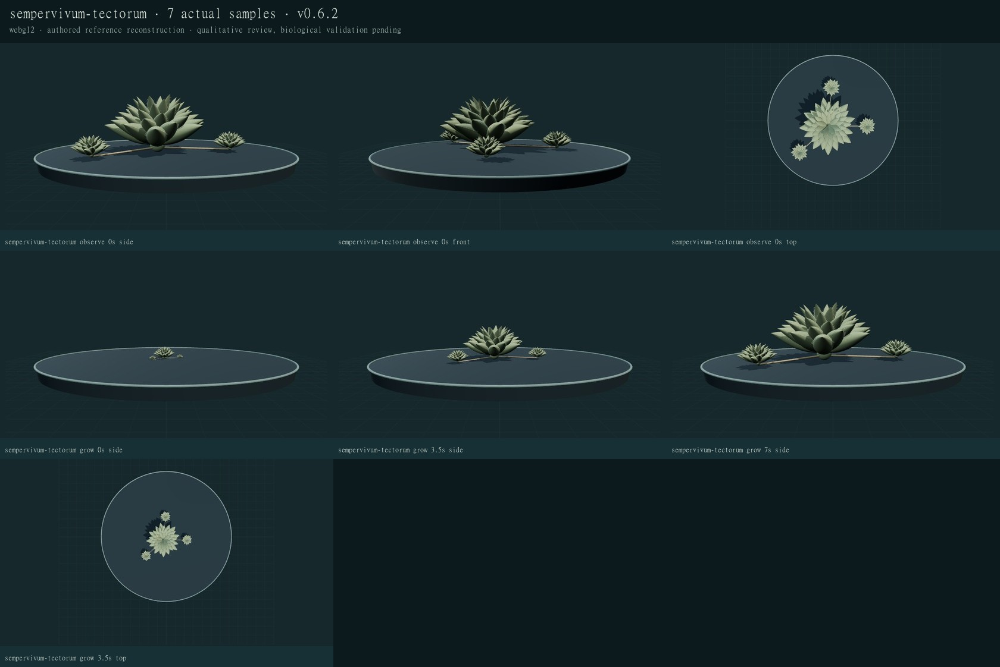
Plantae · Eukaryota · GBIF 5362063 · 7 actual samples · webgl2
Jade plant Crassula ovata
Open this model and its evidence → Compared and revised: Opposite fleshy oval leaves attach to branching stems; final comparison added terminal leaf pairs rather than leaving bare shoot tips.
Compared and revised: Opposite fleshy oval leaves attach to branching stems; final comparison added terminal leaf pairs rather than leaving bare shoot tips.
Remaining inaccuracies: Architecture is too evenly branched, leaf outlines too pointed, woody bark/age proportions and natural canopy density unresolved. No flowers or tissue growth; same mature topology scales uniformly.
Real image: author is sannse . · CC BY-SA 3.0 · Original caption, imaging context and terms. Delivered SHA-256 783cc41a51a164b31a566fc035403c97aecf60101729e113aaf171f9cd0a0a14.
Image identification, stage and phenotype remain subject to specialist verification.
Source and movement scope
- Crassula ovata (Baby Jade, Chinese rubber plant, Dwarf rubber plant, Jade Plant, Jade tree, Japanese rubber plant, Lucky Plant, Money Plant) | North Carolina Extension Gardener Plant Toolbox: Qualitative morphology/ecology account; no coordinates, developmental rates or biomechanical trajectories imported. Retrieved account; does not validate geometry. Retrieval: readable account.
- GBIF · Accepted species taxonomy: Taxonomic name/rank/family matching only; not behavior or native-range evidence.
- Licensed real organism reference and imaging context: Actual reference image and original caption/creator/license; not universal phenotype or biological validation.
- Anchored size study · partial: Authored reference reconstruction from qualitative morphology and the separately licensed image. Shape, pigmentation, stage, dimensions and playback are not measured or independently validated. Anchored size is a display interpolation, not a growth, ontogenetic or biomechanical simulation.
Same model identifier: reference-crassula-ovata. Display seconds have no calibrated biological time.
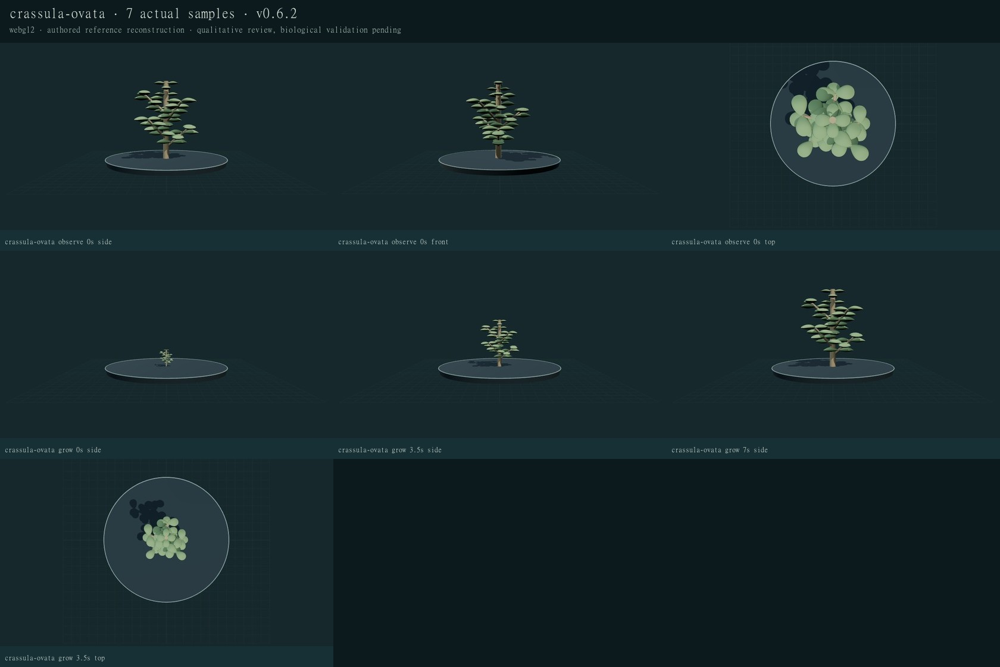
Plantae · Eukaryota · GBIF 3084777 · 7 actual samples · webgl2
Elephant bush Portulacaria afra
Open this model and its evidence → Compared and revised: Small opposite leaves and reddish stems distinguish this shrub; terminal leaf pairs were added after comparison.
Compared and revised: Small opposite leaves and reddish stems distinguish this shrub; terminal leaf pairs were added after comparison.
Remaining inaccuracies: Branches are too sparse/regular and leaves too tapered instead of round. Bark, mature thicket architecture, flowers and condition-dependent physiology are not modelled. Source retrieval limits retained; no carbon-sequestration simulation.
Real image: Dinkum · CC0 · Original caption, imaging context and terms. Delivered SHA-256 1078fa38f75a733f4ca62874492d1a5eef92bc6d73885ce34cea050f41517629.
Image identification, stage and phenotype remain subject to specialist verification.
Source and movement scope
- Scientific account: Qualitative species/account context; no measured mesh or motion imported. Full retrieval limited; indexed context/image and specialist follow-up remain necessary. Retrieval: limited; further reading needed.
- GBIF · Accepted species taxonomy: Taxonomic name/rank/family matching only; not behavior or native-range evidence.
- Licensed real organism reference and imaging context: Actual reference image and original caption/creator/license; not universal phenotype or biological validation.
- Anchored size study · partial: Authored reference reconstruction from qualitative morphology and the separately licensed image. Shape, pigmentation, stage, dimensions and playback are not measured or independently validated. Anchored size is a display interpolation, not a growth, ontogenetic or biomechanical simulation.
Same model identifier: reference-portulacaria-afra. Display seconds have no calibrated biological time.
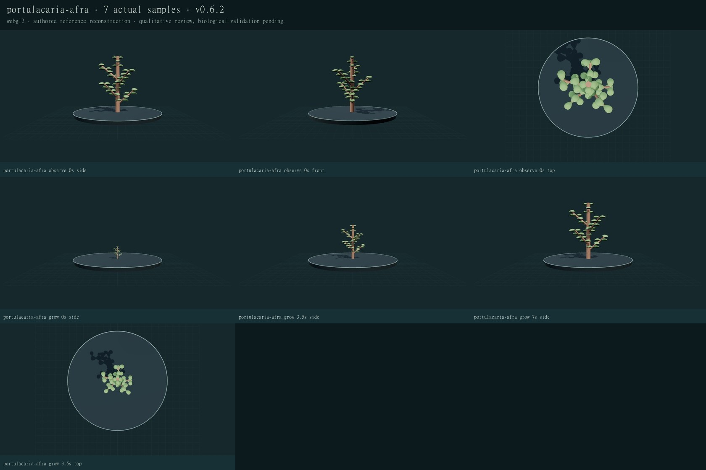
Plantae · Eukaryota · GBIF 5362008 · 7 actual samples · webgl2
White stonecrop Sedum album
Open this model and its evidence → Compared and revised: Low shoots have more cylindrical leaves and white five-petal flowers; ground normalization was corrected from actual transformed geometry.
Compared and revised: Low shoots have more cylindrical leaves and white five-petal flowers; ground normalization was corrected from actual transformed geometry.
Remaining inaccuracies: Leaves are too evenly spaced and swollen, flowering stems too short/regular and flowers lack stamens/sepals. Creeping/rooting architecture and seasonal red pigment are incomplete. Scaling is not developmental motion.
Real image: (c) Thierry Arbault, some rights reserved (CC BY) · CC BY 4.0 · Original caption, imaging context and terms. Delivered SHA-256 d28ed7b9f8a1240d97646b8d50c9abd8826c5cefa043569d76c0719ae7a03855.
Image identification, stage and phenotype remain subject to specialist verification.
Source and movement scope
Same model identifier: reference-sedum-album. Display seconds have no calibrated biological time.
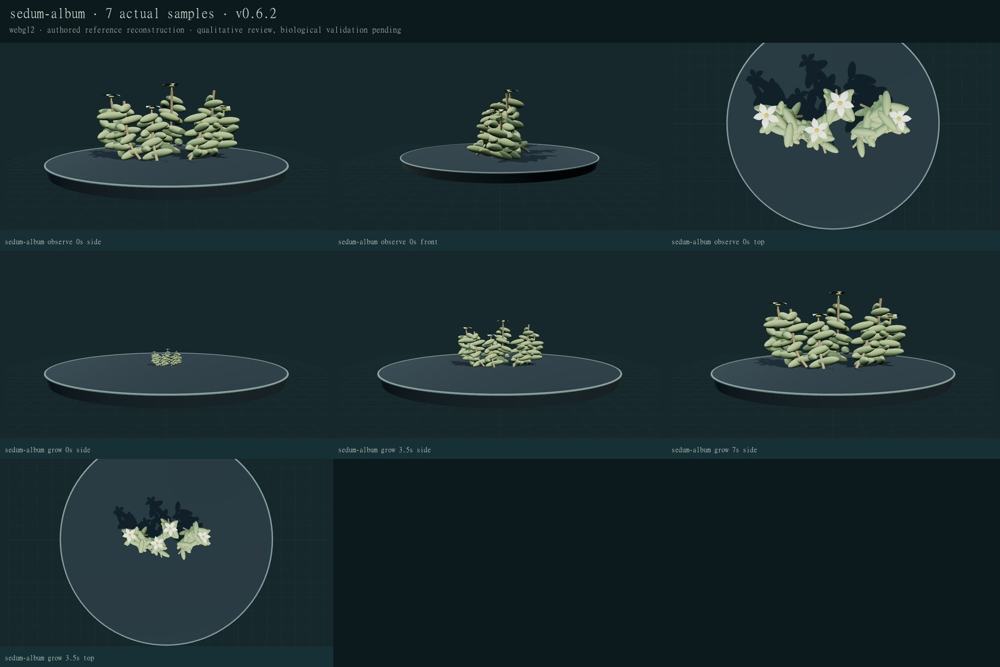
Plantae · Eukaryota · GBIF 5362007 · 7 actual samples · webgl2
Biting stonecrop Sedum acre
Open this model and its evidence → Compared and revised: Dense short shoots with shorter fleshy leaf cues and yellow five-petal flowers distinguish this species from white stonecrop.
Compared and revised: Dense short shoots with shorter fleshy leaf cues and yellow five-petal flowers distinguish this species from white stonecrop.
Remaining inaccuracies: Leaves remain too oval rather than triangular/imbricate; floral organs and natural shoot-to-flower transitions are incomplete. Numerical yellow-green pigment and mature-form scaling are unvalidated.
Real image: Ivar Leidus · CC BY-SA 4.0 · Original caption, imaging context and terms. Delivered SHA-256 58eb97b8c618d424b67f77ec7b42eacb8be03ce0dec40f9c242abf379025eb4b.
Image identification, stage and phenotype remain subject to specialist verification.
Source and movement scope
- Sedum acre (Biting Stonecrop, Common Stonecrop, Gold-moss, Moss Stonecrop, Stonecrop) | North Carolina Extension Gardener Plant Toolbox: Qualitative morphology/ecology account; no coordinates, developmental rates or biomechanical trajectories imported. Retrieved account; does not validate geometry. Retrieval: readable account.
- GBIF · Accepted species taxonomy: Taxonomic name/rank/family matching only; not behavior or native-range evidence.
- Licensed real organism reference and imaging context: Actual reference image and original caption/creator/license; not universal phenotype or biological validation.
- Anchored size study · partial: Authored reference reconstruction from qualitative morphology and the separately licensed image. Shape, pigmentation, stage, dimensions and playback are not measured or independently validated. Anchored size is a display interpolation, not a growth, ontogenetic or biomechanical simulation.
Same model identifier: reference-sedum-acre. Display seconds have no calibrated biological time.
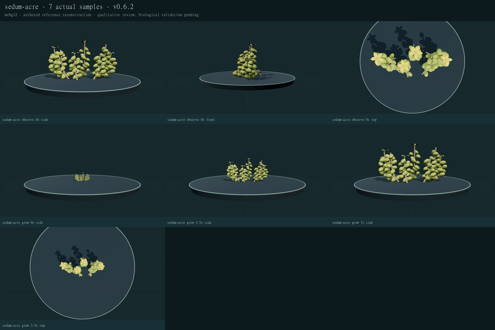
Plantae · Eukaryota · GBIF 4198346 · 7 actual samples · webgl2
Panda plant Kalanchoe tomentosa
Open this model and its evidence → Compared and revised: Opposite pale hairy leaves include darker apical pigment; instanced hairs and terminal leaf pairs were reviewed on the same model.
Compared and revised: Opposite pale hairy leaves include darker apical pigment; instanced hairs and terminal leaf pairs were reviewed on the same model.
Remaining inaccuracies: Leaf margins/tip notches and dark marking positions are too regular, leaves too small and canopy too branched. Fine optical pubescence, leaf scars and flowers remain incomplete. No measured hair or growth data.
Real image: Agnieszka Kwiecień, Nova · CC BY-SA 4.0 · Original caption, imaging context and terms. Delivered SHA-256 3c38df4107662721d76b56652087178b4409d7e7bfb2a69aa93bc7605f6672ea.
Image identification, stage and phenotype remain subject to specialist verification.
Source and movement scope
- Kalanchoe tomentosa (Cocoon Plant, Panda Bear Plant, Panda Plant, Plush Plant, Pussy Ears, Teddy Bear Cactus, Velvet Leaf Kalanchoe) | North Carolina Extension Gardener Plant Toolbox: Qualitative morphology/ecology account; no coordinates, developmental rates or biomechanical trajectories imported. Retrieved account; does not validate geometry. Retrieval: readable account.
- GBIF · Accepted species taxonomy: Taxonomic name/rank/family matching only; not behavior or native-range evidence.
- Licensed real organism reference and imaging context: Actual reference image and original caption/creator/license; not universal phenotype or biological validation.
- Anchored size study · partial: Authored reference reconstruction from qualitative morphology and the separately licensed image. Shape, pigmentation, stage, dimensions and playback are not measured or independently validated. Anchored size is a display interpolation, not a growth, ontogenetic or biomechanical simulation.
Same model identifier: reference-kalanchoe-tomentosa. Display seconds have no calibrated biological time.
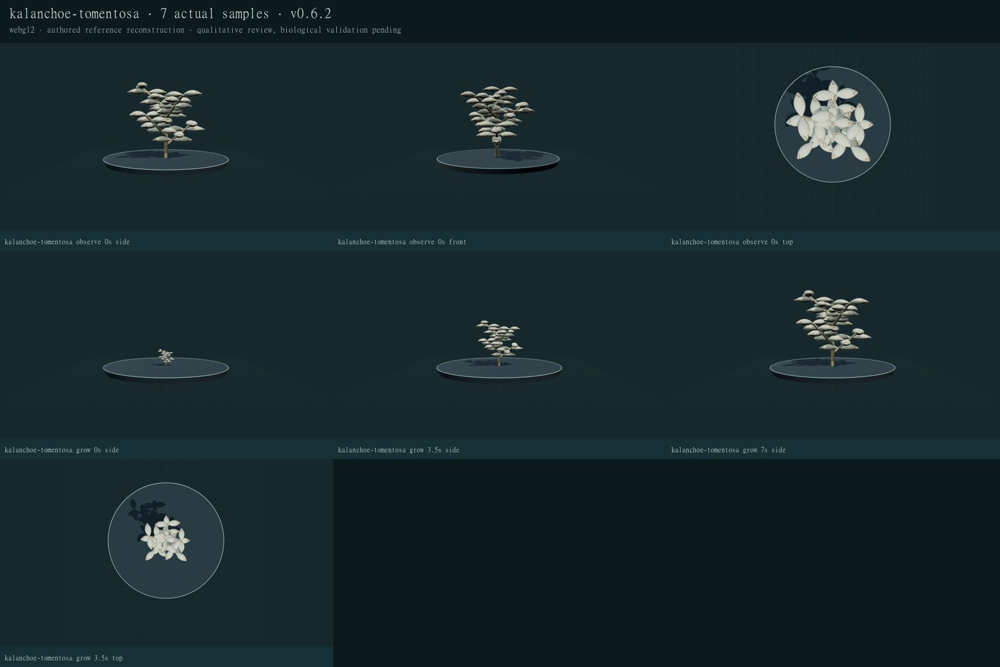
Fungi · Eukaryota · GBIF 5249271 · 7 actual samples · webgl2
Jelly ear Auricularia auricula-judae
Open this model and its evidence → Compared and revised: Thin brown ear-like cups/folds were compared with the photographed wood-attached fruit bodies; broad regional taxon scope is disclosed.
Compared and revised: Thin brown ear-like cups/folds were compared with the photographed wood-attached fruit bodies; broad regional taxon scope is disclosed.
Remaining inaccuracies: Cups overlap unnaturally and backfaces become too dark; attachment orientation, rounded rims, tissue thickness, hairs and translucency need work. European species identity is not established by the broad North American account. Uniform scaling is not fruiting development.
Real image: Stu's Images · CC BY-SA 4.0 · Original caption, imaging context and terms. Delivered SHA-256 5e2a705e6baa8d3f0b8e14a54d088b4a88029b214e711577b13b120ddfa81c4f.
Image identification, stage and phenotype remain subject to specialist verification.
Source and movement scope
- Wood Ear (Tree Ear) | Missouri Department of Conservation: Regional broad Auricularia auricula account, explicitly related/historical taxon context; does not resolve the current European species concept. Retrieved account; does not validate geometry. Retrieval: readable account.
- GBIF · Accepted species taxonomy: Taxonomic name/rank/family matching only; not behavior or native-range evidence.
- Licensed real organism reference and imaging context: Actual reference image and original caption/creator/license; not universal phenotype or biological validation.
- Anchored size study · partial: Authored reference reconstruction from qualitative morphology and the separately licensed image. Shape, pigmentation, stage, dimensions and playback are not measured or independently validated. Anchored size is a display interpolation, not a growth, ontogenetic or biomechanical simulation.
Same model identifier: reference-auricularia-auricula-judae. Display seconds have no calibrated biological time.
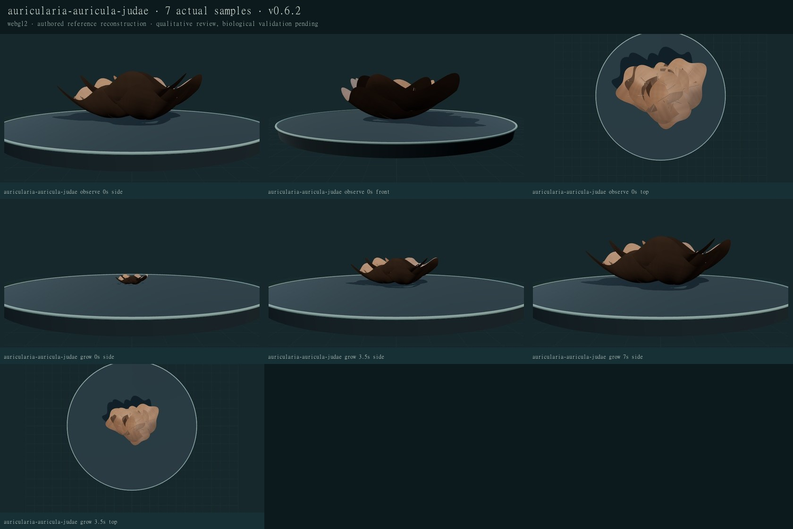
Fungi · Eukaryota · GBIF 11945016 · 7 actual samples · webgl2
Yellow brain Tremella mesenterica
Open this model and its evidence → Compared and revised: Yellow lobed gelatinous mass has folded surface relief, compared with the real fruit body and fungal-host context.
Compared and revised: Yellow lobed gelatinous mass has folded surface relief, compared with the real fruit body and fungal-host context.
Remaining inaccuracies: Lobes remain too rounded and vertically pumpkin-like; actual irregular deep folds, wet translucency, wood attachment and Peniophora host interaction are absent. Size interpolation is not fungal development or host infection.
Real image: J. Carmichael · Public domain · Original caption, imaging context and terms. Delivered SHA-256 eaba5435e54a84159b68b8f7b8c2b093fdcc8dfe4c2693709d781fbe729497d8.
Image identification, stage and phenotype remain subject to specialist verification.
Source and movement scope
- Tremella mesenterica (MushroomExpert.Com): Qualitative morphology/ecology account; no coordinates, developmental rates or biomechanical trajectories imported. Retrieved account; does not validate geometry. Retrieval: readable account.
- GBIF · Accepted species taxonomy: Taxonomic name/rank/family matching only; not behavior or native-range evidence.
- Licensed real organism reference and imaging context: Actual reference image and original caption/creator/license; not universal phenotype or biological validation.
- Anchored size study · partial: Authored reference reconstruction from qualitative morphology and the separately licensed image. Shape, pigmentation, stage, dimensions and playback are not measured or independently validated. Anchored size is a display interpolation, not a growth, ontogenetic or biomechanical simulation.
Same model identifier: reference-tremella-mesenterica. Display seconds have no calibrated biological time.
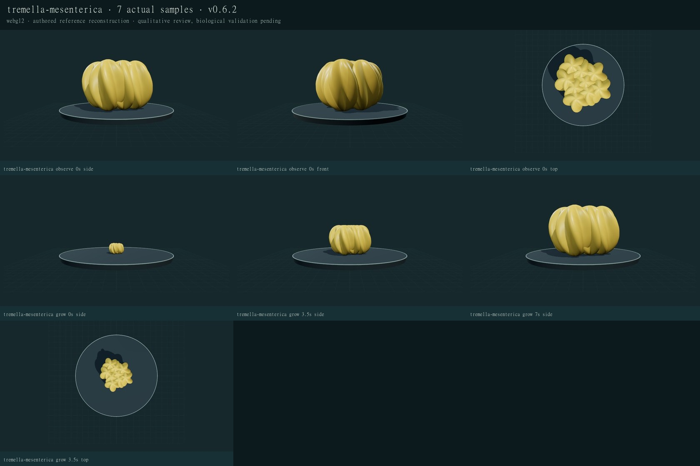
Fungi · Eukaryota · GBIF 2512925 · 7 actual samples · webgl2
Common jellyspot Dacrymyces stillatus
Open this model and its evidence → Compared and revised: Many small yellow pustule forms are kept separate from the larger brain-fungus mass.
Compared and revised: Many small yellow pustule forms are kept separate from the larger brain-fungus mass.
Remaining inaccuracies: Pustules are too regularly distributed, equally sized and ribbed; natural smooth gelatinous domes/coalescence, substrate embedding and microscopic basidia are unresolved. No actual growth or hydration sequence.
Real image: Nova Patch · CC BY-SA 4.0 · Original caption, imaging context and terms. Delivered SHA-256 a47fc1ce8abbcbd078eb35abac42afa7c62ec434bbdfc00249554d7420680df1.
Image identification, stage and phenotype remain subject to specialist verification.
Source and movement scope
- Dacrymyces stillatus (MushroomExpert.Com): Qualitative morphology/ecology account; no coordinates, developmental rates or biomechanical trajectories imported. Retrieved account; does not validate geometry. Retrieval: readable account.
- GBIF · Accepted species taxonomy: Taxonomic name/rank/family matching only; not behavior or native-range evidence.
- Licensed real organism reference and imaging context: Actual reference image and original caption/creator/license; not universal phenotype or biological validation.
- Anchored size study · partial: Authored reference reconstruction from qualitative morphology and the separately licensed image. Shape, pigmentation, stage, dimensions and playback are not measured or independently validated. Anchored size is a display interpolation, not a growth, ontogenetic or biomechanical simulation.
Same model identifier: reference-dacrymyces-stillatus. Display seconds have no calibrated biological time.
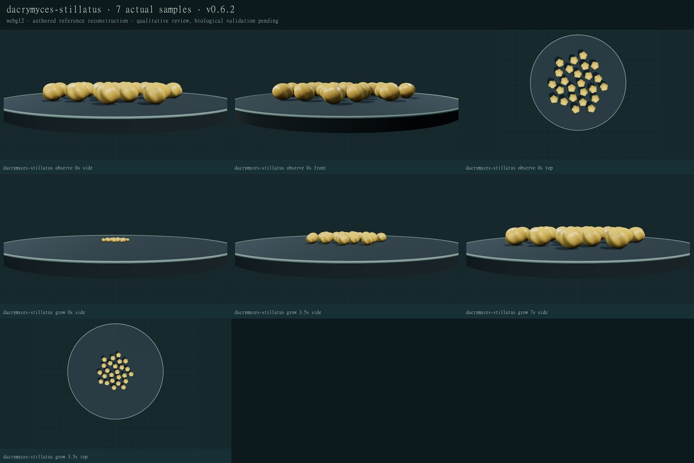
Fungi · Eukaryota · GBIF 9134585 · 7 actual samples · webgl2
Yellow stagshorn Calocera viscosa
Open this model and its evidence → Compared and revised: Yellow upright forked branches and pointed tips are distinguished from rounded jelly pustules.
Compared and revised: Yellow upright forked branches and pointed tips are distinguished from rounded jelly pustules.
Remaining inaccuracies: Branches are too thin/tree-like and divisions too regular, missing broad fleshy compressed forks and sticky surface optics. Conifer substrate and microscopic diagnostic characters absent. Scaling does not model branching ontogeny.
Real image: Achim Lammerts (Syntaxys) · CC BY-SA 4.0 · Original caption, imaging context and terms. Delivered SHA-256 312b4d76bd79dabab3fdf9eb07bd112e63f044fe465239a788a26d6fecab17ec.
Image identification, stage and phenotype remain subject to specialist verification.
Source and movement scope
- Calocera viscosa (MushroomExpert.Com): Qualitative morphology/ecology account; no coordinates, developmental rates or biomechanical trajectories imported. Retrieved account; does not validate geometry. Retrieval: readable account.
- GBIF · Accepted species taxonomy: Taxonomic name/rank/family matching only; not behavior or native-range evidence.
- Licensed real organism reference and imaging context: Actual reference image and original caption/creator/license; not universal phenotype or biological validation.
- Anchored size study · partial: Authored reference reconstruction from qualitative morphology and the separately licensed image. Shape, pigmentation, stage, dimensions and playback are not measured or independently validated. Anchored size is a display interpolation, not a growth, ontogenetic or biomechanical simulation.
Same model identifier: reference-calocera-viscosa. Display seconds have no calibrated biological time.
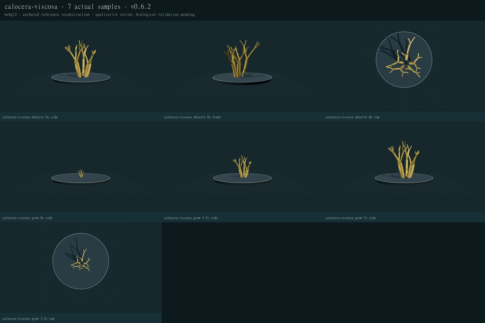
Fungi · Eukaryota · GBIF 5249883 · 7 actual samples · webgl2
Crested coral Clavulina coralloides
Open this model and its evidence → Compared and revised: Pale branching structure has small crest-like terminal cues; historical C. cristata reference concept is explicit.
Compared and revised: Pale branching structure has small crest-like terminal cues; historical C. cristata reference concept is explicit.
Remaining inaccuracies: Branches remain too slender and tubular, terminal flattened crests too small/regular and tissue joins simplified. Field morphology alone is not species identification; microscopic/lineage distinctions unresolved. No developmental branching simulation.
Real image: Sasata · CC BY-SA 3.0 · Original caption, imaging context and terms. Delivered SHA-256 d8a8f758001d0e627232cf4c42b052d5541accaf5f4afb39f35b66ddfbcff6c4.
Image identification, stage and phenotype remain subject to specialist verification.
Source and movement scope
- Clavulina cristata (MushroomExpert.Com): Qualitative species/account context; no measured mesh or motion imported. Retrieved account; does not validate geometry. Retrieval: readable account.
- GBIF · Accepted species taxonomy: Taxonomic name/rank/family matching only; not behavior or native-range evidence.
- Licensed real organism reference and imaging context: Actual reference image and original caption/creator/license; not universal phenotype or biological validation.
- Anchored size study · partial: Authored reference reconstruction from qualitative morphology and the separately licensed image. Shape, pigmentation, stage, dimensions and playback are not measured or independently validated. Anchored size is a display interpolation, not a growth, ontogenetic or biomechanical simulation.
Same model identifier: reference-clavulina-coralloides. Display seconds have no calibrated biological time.
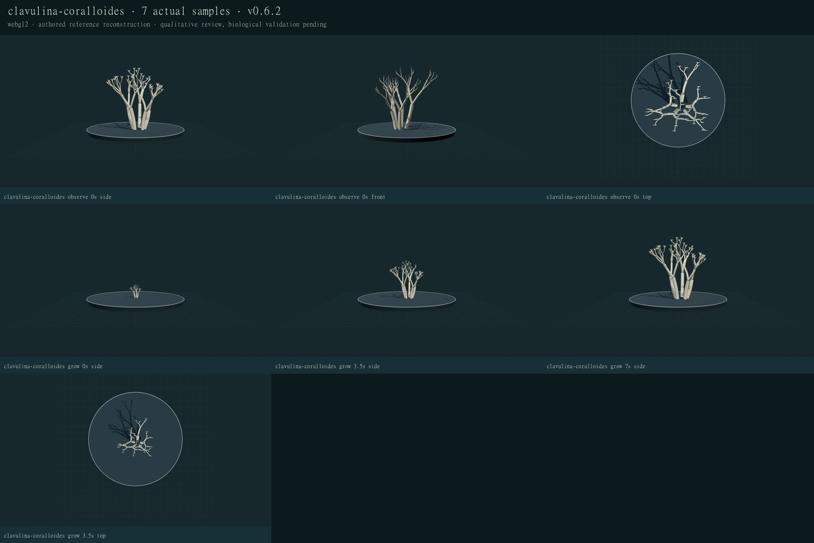
Fungi · Eukaryota · GBIF 5243258 · 7 actual samples · webgl2
Common puffball Lycoperdon perlatum
Open this model and its evidence → Compared and revised: Pear-shaped enclosed fruit body bears many small surface spines, compared with the photographed young specimen.
Compared and revised: Pear-shaped enclosed fruit body bears many small surface spines, compared with the photographed young specimen.
Remaining inaccuracies: Sterile basal region is too short and the body too spherical; spines too uniform, scars and mature apical pore absent. Internal gleba, spore maturation/release and real developmental timing are not represented.
Real image: Daniel Ullrich, Threedots · CC BY-SA 3.0 · Original caption, imaging context and terms. Delivered SHA-256 a8a18924644ed996ee26d734547edcc8e072acf83b7666aefe347676a4b2afea.
Image identification, stage and phenotype remain subject to specialist verification.
Source and movement scope
- Lycoperdon perlatum (MushroomExpert.Com): Qualitative morphology/ecology account; no coordinates, developmental rates or biomechanical trajectories imported. Retrieved account; does not validate geometry. Retrieval: readable account.
- GBIF · Accepted species taxonomy: Taxonomic name/rank/family matching only; not behavior or native-range evidence.
- Licensed real organism reference and imaging context: Actual reference image and original caption/creator/license; not universal phenotype or biological validation.
- Anchored size study · partial: Authored reference reconstruction from qualitative morphology and the separately licensed image. Shape, pigmentation, stage, dimensions and playback are not measured or independently validated. Anchored size is a display interpolation, not a growth, ontogenetic or biomechanical simulation.
Same model identifier: reference-lycoperdon-perlatum. Display seconds have no calibrated biological time.
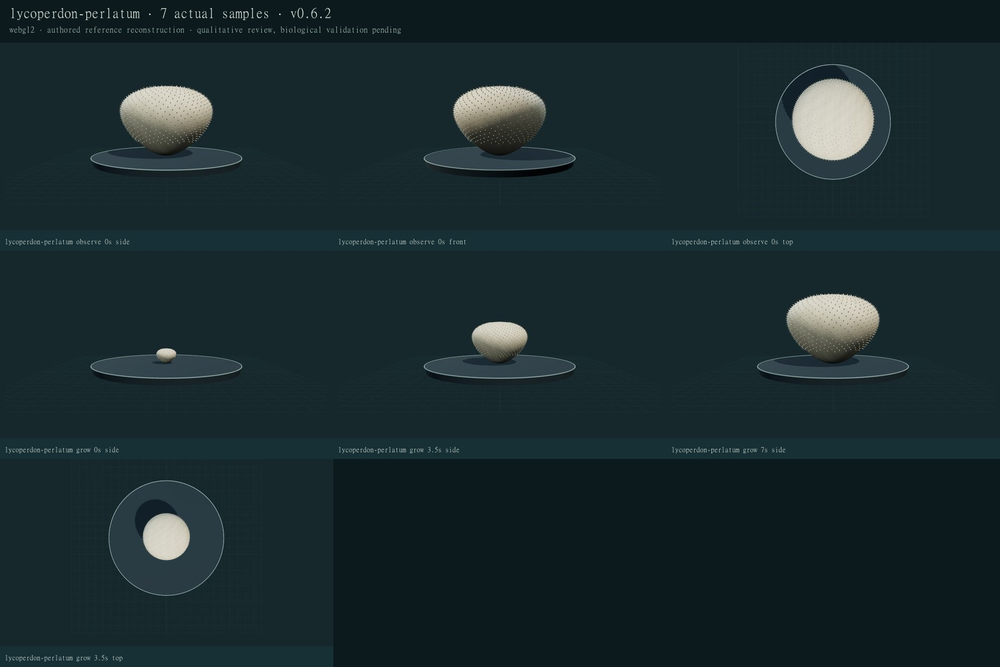
Fungi · Eukaryota · GBIF 5239982 · 7 actual samples · webgl2
Common earthball Scleroderma citrinum
Open this model and its evidence → Compared and revised: Rounded fruit body was made taller and spiral-like ridging replaced with irregular crack-pattern pigment after image comparison.
Compared and revised: Rounded fruit body was made taller and spiral-like ridging replaced with irregular crack-pattern pigment after image comparison.
Remaining inaccuracies: Cracks remain a numerical surface approximation, not the thick irregular scaly peridium; base/cords and dark interior are absent. No dehiscence, spore development or measured surface structure.
Real image: Eric Steinert · CC BY-SA 3.0 · Original caption, imaging context and terms. Delivered SHA-256 bcadba77a5b58f498e0572efc2d8f72d9ef06f456daad73d7c42d66b356e2ffe.
Image identification, stage and phenotype remain subject to specialist verification.
Source and movement scope
- Scleroderma citrinum (MushroomExpert.Com): Qualitative morphology/ecology account; no coordinates, developmental rates or biomechanical trajectories imported. Retrieved account; does not validate geometry. Retrieval: readable account.
- GBIF · Accepted species taxonomy: Taxonomic name/rank/family matching only; not behavior or native-range evidence.
- Licensed real organism reference and imaging context: Actual reference image and original caption/creator/license; not universal phenotype or biological validation.
- Anchored size study · partial: Authored reference reconstruction from qualitative morphology and the separately licensed image. Shape, pigmentation, stage, dimensions and playback are not measured or independently validated. Anchored size is a display interpolation, not a growth, ontogenetic or biomechanical simulation.
Same model identifier: reference-scleroderma-citrinum. Display seconds have no calibrated biological time.
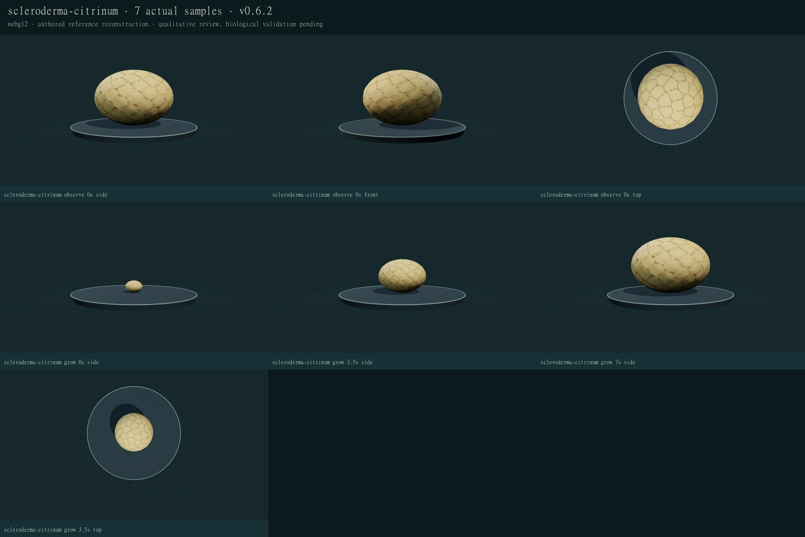
Microeukaryotes · Eukaryota · GBIF 2647513 · 3 actual samples · webgl2
Rotating desmid Micrasterias rotata
Open this model and its evidence → Compared and revised: Two connected incised semicell outlines replace detached decorative spikes; central connection is retained.
Compared and revised: Two connected incised semicell outlines replace detached decorative spikes; central connection is retained.
Remaining inaccuracies: Outline is too thick/block-like, polar/lateral lobes and tooth branching do not yet match diagnostic M. rotata morphology. Chloroplast lobes, pyrenoids, vacuoles and wall layers are absent. No division or morphogenesis simulation; top view is essential for this flattened study.
Real image: Sándor Bancsó · CC BY 4.0 · Original caption, imaging context and terms. Delivered SHA-256 ebe689d8939548b76c66f66524a33143c3e2cb4397ff50f36a1478d21d23a852.
Image identification, stage and phenotype remain subject to specialist verification.
Source and movement scope
- pubmed.ncbi.nlm.nih.gov: Qualitative morphology/ecology context; no measurements or rates imported. Source specimens, laboratory conditions and historical taxon concepts may differ from the reference image. Full retrieval limited; indexed context/image and specialist follow-up remain necessary. Retrieval: limited; further reading needed.
- GBIF · Accepted species taxonomy: Taxonomic name/rank/family matching only; not behavior or native-range evidence.
- Licensed real organism reference and imaging context: Actual reference image and original caption/creator/license; not universal phenotype or biological validation.
- Division — pending · unavailable: Biological process documented in the species context; no working simulation of this mechanism is claimed.
Same model identifier: reference-micrasterias-rotata. Display seconds have no calibrated biological time.
Microeukaryotes · Eukaryota · GBIF 2646383 · 3 actual samples · webgl2
Moniliferous desmid Closterium moniliferum
Open this model and its evidence → Compared and revised: A continuous tapered crescent cell was compared with the licensed light micrograph and primary survey context.
Compared and revised: A continuous tapered crescent cell was compared with the licensed light micrograph and primary survey context.
Remaining inaccuracies: Cross-section too uniformly rounded and body opaque; paired chloroplast ridges, central nuclear region, terminal vacuoles and wall striae are not resolved. No gliding, mucilage or division. Image scale bar does not calibrate the model.
Real image: Petr Knotek · CC BY 4.0 · Original caption, imaging context and terms. Delivered SHA-256 170aa1b95d2dc76088a3cfc9b3e5dc65953333bd099702e16666bbc83cf893d3.
Image identification, stage and phenotype remain subject to specialist verification.
Source and movement scope
- Species account: Qualitative morphology/ecology account; no coordinates, developmental rates or biomechanical trajectories imported. Retrieved account; does not validate geometry. Retrieval: readable account.
- GBIF · Accepted species taxonomy: Taxonomic name/rank/family matching only; not behavior or native-range evidence.
- Licensed real organism reference and imaging context: Actual reference image and original caption/creator/license; not universal phenotype or biological validation.
- Division — pending · unavailable: Biological process documented in the species context; no working simulation of this mechanism is claimed.
Same model identifier: reference-closterium-moniliferum. Display seconds have no calibrated biological time.
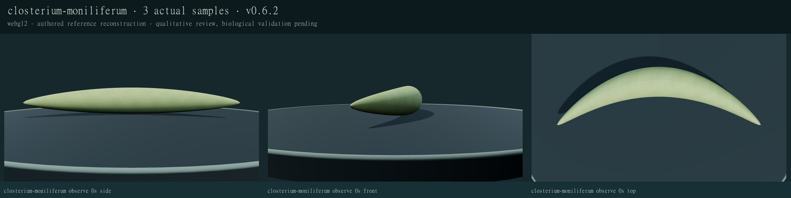
Microeukaryotes · Eukaryota · GBIF 5274595 · 3 actual samples · webgl2
Botrytis desmid Cosmarium botrytis
Open this model and its evidence → Compared and revised: Two rounded semicells and an isthmus remain connected; previously floating granules were moved onto the actual cortex.
Compared and revised: Two rounded semicells and an isthmus remain connected; previously floating granules were moved onto the actual cortex.
Remaining inaccuracies: Semicells are too elliptical/flattened rather than rounded-trapezoid, granules too uniformly distributed, chloroplast/pyrenoid structure absent. CCAP strain is not the photographed cell; no division or validated morphology.
Real image: Atriplex82 · CC BY-SA 4.0 · Original caption, imaging context and terms. Delivered SHA-256 7424ab2fb448e0c2a4a139c6248269ab177ae2ebee1178b76779b77075111ff3.
Image identification, stage and phenotype remain subject to specialist verification.
Source and movement scope
- Cosmarium botrytis: Species/culture account context; no calibrated mesh or measured trajectories imported. Retrieved account; does not validate geometry. Retrieval: readable account.
- GBIF · Accepted species taxonomy: Taxonomic name/rank/family matching only; not behavior or native-range evidence.
- Licensed real organism reference and imaging context: Actual reference image and original caption/creator/license; not universal phenotype or biological validation.
- Division — pending · unavailable: Biological process documented in the species context; no working simulation of this mechanism is claimed.
Same model identifier: reference-cosmarium-botrytis. Display seconds have no calibrated biological time.
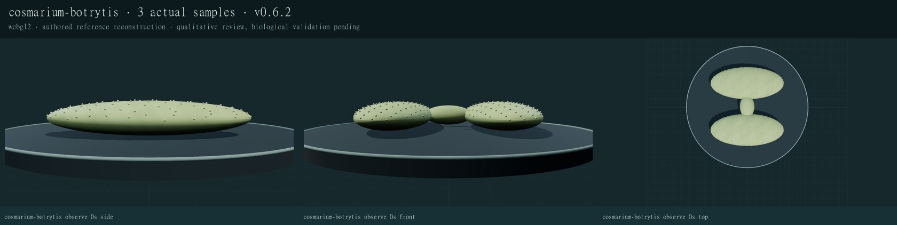
Microeukaryotes · Eukaryota · GBIF 2641920 · 3 actual samples · webgl2
Duplex water net alga Pediastrum duplex
Open this model and its evidence → Compared and revised: A 16-cell planar coenobium has spaces and paired outer projections; the initial non-biological 19-cell layout was corrected against the primary morphology account.
Compared and revised: A 16-cell planar coenobium has spaces and paired outer projections; the initial non-biological 19-cell layout was corrected against the primary morphology account.
Remaining inaccuracies: Cell junctions, four-sided contours and peripheral horns remain crude and spacing overly regular. Chloroplasts, pyrenoids, wall optics and colony lineage variability unresolved. No zoospore assembly or coenobium reproduction simulation.
Real image: Dr. Ralf Wagner · CC BY-SA 3.0 · Original caption, imaging context and terms. Delivered SHA-256 739e997c83114d225782164ea4640e0386b102dafee2adef2e053cf0b3e2849d.
Image identification, stage and phenotype remain subject to specialist verification.
Source and movement scope
- 北京市绿藻门盘星藻形态及分类研究: Qualitative species/account context; no measured mesh or motion imported. Retrieved account; does not validate geometry. Retrieval: readable account.
- GBIF · Accepted species taxonomy: Taxonomic name/rank/family matching only; not behavior or native-range evidence.
- Licensed real organism reference and imaging context: Actual reference image and original caption/creator/license; not universal phenotype or biological validation.
- Division — pending · unavailable: Biological process documented in the species context; no working simulation of this mechanism is claimed.
Same model identifier: reference-pediastrum-duplex. Display seconds have no calibrated biological time.
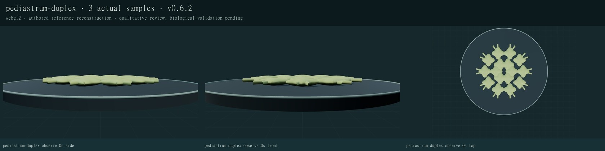
Microeukaryotes · Eukaryota · GBIF 2641977 · 3 actual samples · webgl2
Water net Hydrodictyon reticulatum
Open this model and its evidence → Compared and revised: Cylindrical segments join in a corrected hexagonal net patch; shared edges are deduplicated.
Compared and revised: Cylindrical segments join in a corrected hexagonal net patch; shared edges are deduplicated.
Remaining inaccuracies: This is a small flat colony fragment, not the natural three-dimensional net sac with many cells. Cell ends/junctions and chloroplast meshwork are too regular and thin. No development, cytoplasmic streaming or reproductive daughter nets.
Real image: ja:User:NEON / User:NEON_ja · CC BY-SA 2.5 · Original caption, imaging context and terms. Delivered SHA-256 8f33d24f7bb6dd237d6c7d76971f39090162fc0f4c426ff95db7a0b172250c73.
Image identification, stage and phenotype remain subject to specialist verification.
Source and movement scope
Same model identifier: reference-hydrodictyon-reticulatum. Display seconds have no calibrated biological time.
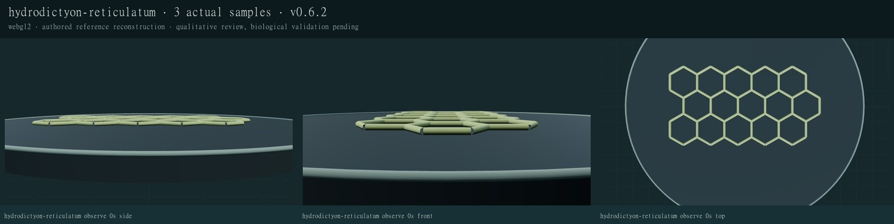
Bacteria · Bacteria · GBIF 9797722 · 3 actual samples · webgl2
Radiation-resistant deinococcus Deinococcus radiodurans
Open this model and its evidence → Compared and revised: Four rounded cells show a tetrad arrangement in neutral illustrative pigment, distinct from false-colour TEM treatment.
Compared and revised: Four rounded cells show a tetrad arrangement in neutral illustrative pigment, distinct from false-colour TEM treatment.
Remaining inaccuracies: Cells now touch, but remain overly spherical without the natural tetrad envelope/septa. Envelope layers and internal nucleoid absent; TEM section is not an external surface photograph. No division, repair or radiation-resistance simulation.
Real image: Credit: TEM of D. radiodurans acquired in the laboratory of Michael Daly, Uniformed Services University, Bethesda, MD, USA. http://www.usuhs.mil/pat/deinococcus/index_20.htm · Public domain · Original caption, imaging context and terms. Delivered SHA-256 4673588aca0f50c99ad626700f6785f664d4210c51488e3290acf84411505a0b.
False-colour transmission electron micrograph; prepared section and image colour do not represent natural external pigmentation.
Source and movement scope
- Details - Leibniz Institute DSMZ: Qualitative morphology/ecology account; no coordinates, developmental rates or biomechanical trajectories imported. Retrieved account; does not validate geometry. Retrieval: readable account.
- GBIF · Accepted species taxonomy: Taxonomic name/rank/family matching only; not behavior or native-range evidence.
- Licensed real organism reference and imaging context: Actual reference image and original caption/creator/license; not universal phenotype or biological validation.
- Division — pending · unavailable: Biological process documented in the species context; no working simulation of this mechanism is claimed.
Same model identifier: reference-deinococcus-radiodurans. Display seconds have no calibrated biological time.
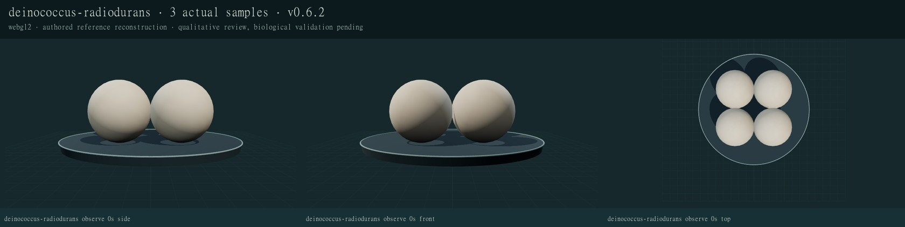
Bacteria · Bacteria · GBIF 10792529 · 3 actual samples · webgl2
Plant-associated lactobacillus Lactiplantibacillus plantarum
Open this model and its evidence → Compared and revised: Rounded rods in a chain are linked to real SEM panels under control/acid stress; exact article-author CC BY attribution is retained.
Compared and revised: Rounded rods in a chain are linked to real SEM panels under control/acid stress; exact article-author CC BY attribution is retained.
Remaining inaccuracies: Uniform straight rods touch in the chain but omit strain/condition-dependent elongation, septa and envelope changes. SEM preparation can change appearance; neither its scale nor stress measurements calibrate this geometry. No division, fermentation or acid-stress mechanism.
Real image: Athira Venugopal; Doron Steinberg; Ora Moyal; Shira Yonassi; Noga Glaicher; Eliraz Gitelman; Moshe Shemesh; Moshe Amitay · CC BY 4.0 · Original caption, imaging context and terms. Delivered SHA-256 6126ed614a957074fd14f59dd47d219f7a941cb2ad58b99f8037004cbaf2816a.
Cultured cells in control and acid-stress conditions. Differences between strains and preparation conditions are not calibrated into this model. This micrograph is not the type-strain photograph.
Source and movement scope
Same model identifier: reference-lactiplantibacillus-plantarum. Display seconds have no calibrated biological time.
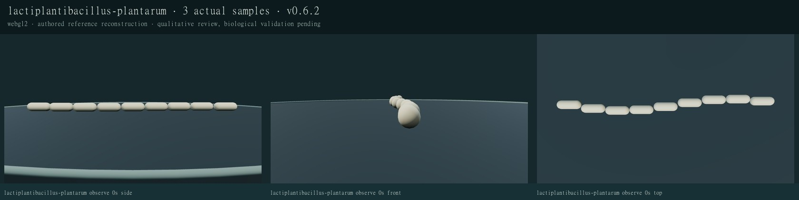
Bacteria · Bacteria · GBIF 7381052 · 3 actual samples · webgl2
Thermophilic streptococcus Streptococcus thermophilus
Open this model and its evidence → Compared and revised: Ovoid cells form a curved chain, with colour-enhanced confocal imaging explicitly distinguished from natural pigmentation.
Compared and revised: Ovoid cells form a curved chain, with colour-enhanced confocal imaging explicitly distinguished from natural pigmentation.
Remaining inaccuracies: Cells and spacing are too uniform and septal junctions unresolved. The confocal cluster is not a measured single chain. Capsule/envelope variation, division and lactic-acid fermentation remain unimplemented.
Real image: Adam Benyoussef · CC BY-SA 3.0 · Original caption, imaging context and terms. Delivered SHA-256 fed7dc5fe22ae3485d25945ae664f04aa642ab9eab20625c912b762bd7311aef.
Colour-enhanced confocal micrograph of chains; imaging treatment is not natural visible cell colour.
Source and movement scope
- Details - Leibniz Institute DSMZ: Qualitative morphology/ecology account; no coordinates, developmental rates or biomechanical trajectories imported. Retrieved account; does not validate geometry. Retrieval: readable account.
- GBIF · Accepted species taxonomy: Taxonomic name/rank/family matching only; not behavior or native-range evidence.
- Licensed real organism reference and imaging context: Actual reference image and original caption/creator/license; not universal phenotype or biological validation.
- Division — pending · unavailable: Biological process documented in the species context; no working simulation of this mechanism is claimed.
Same model identifier: reference-streptococcus-thermophilus. Display seconds have no calibrated biological time.
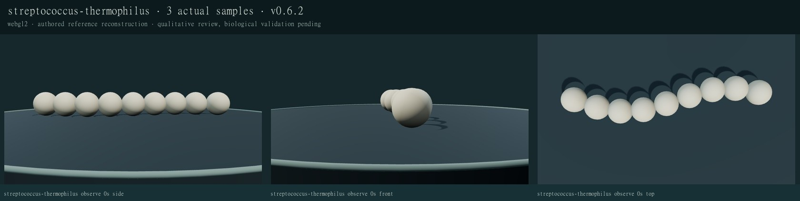